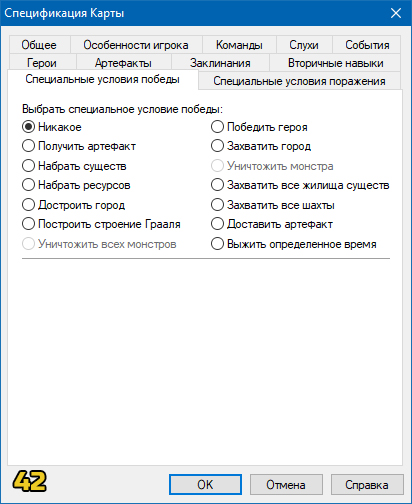
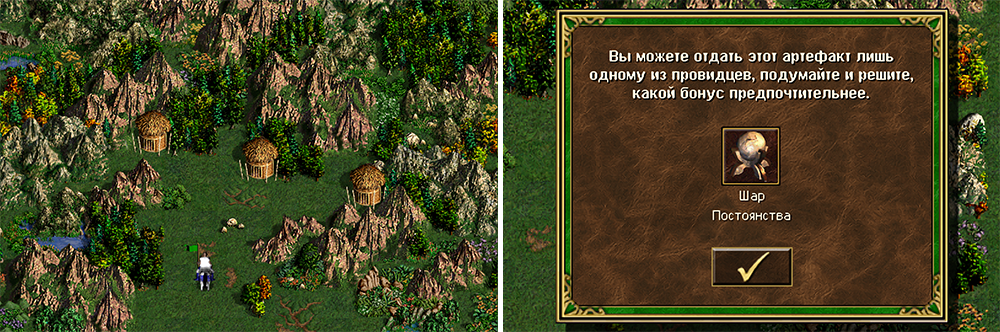
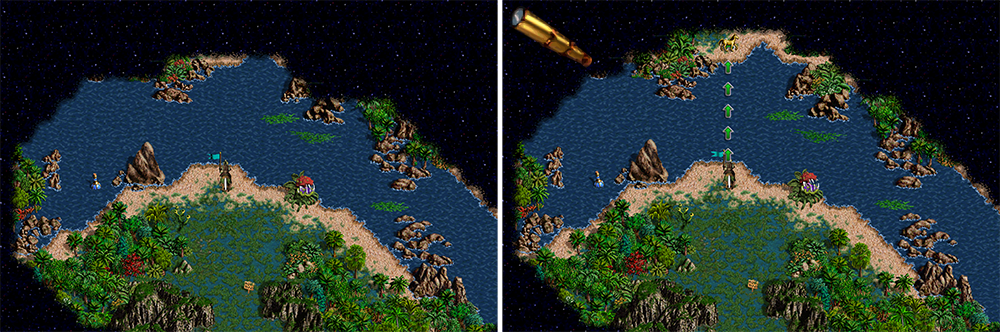

О редакторе
[t]Редактор карт позволяет создавать полноценные сценарии для игры на любой вкус и цвет, или редактировать уже созданные, включая все стандартные карты, доступные игрокам. Редактор поставляется вместе с игрой и не требует отдельного скачивания и установки.
[t]Редактор предоставляет много возможностей для создания карт, однако эти возможности могут быть расширены за счет дополнительного софта. Его можно найти в соответствующем разделе сайта. Кроме того, Вы можете скачать готовые карты, созданные нами, в следующем разделе.
[t]В этом разделе сайта Вы найдете информацию обо всех кнопках и панелях редактора, их предназначении, приемы создания карт с нуля и до финальных настроек, а также полезные идеи для своих творений. Этот гайд не является единственным верным способом создания карт, но он поможет понять примерную последовательность тем, кто создает сценарий впервые.
[t]Оглавление страницы расположено справа. Ниже представлено окно редактора при первом открытии:

Кнопки и панели редактора
[t]Итак, начнем рассматривать все панели и кнопки по порядку. Помимо основного меню, на панель вынесены кнопки быстрого доступа. Каждая из них дублирует аналогичное действие из меню. Ниже они будут отображены в начале описания каждого из действий:
 [t]1. Вкладка [s]Файл[/s] - Основные действия с файлом:
[t]1. Вкладка [s]Файл[/s] - Основные действия с файлом:
[t] [s]Новый[/s] - Создает шаблон новой карты. Перед созданием указывается версия, размер и наличие подземного мира. Также здесь можно сгенерировать случайную карту ([s]рис. 7[/s]).
[s]Новый[/s] - Создает шаблон новой карты. Перед созданием указывается версия, размер и наличие подземного мира. Также здесь можно сгенерировать случайную карту ([s]рис. 7[/s]).
[t] [s]Открыть[/s] - Открывает директорию, где хранятся все файлы карт, по умолчанию "[s]Папка с игрой/Maps[/s]". Далее можно открыть любой файл карты с расширением [s].h3m[/s].
[t] [s]Сохранить[/s] - Пересохраняет текущую карту. Если шаблон карты до этого не был сохранен, то редактор предложит создать новый файл и назвать его.
[t]• [s]Сохранить как[/s] - Не пересохраняет исходный файл, а создает новый, которому также нужно присвоить имя.
[t]• [s]Экспортировать текст[/s] - Выгружает файл в формате [s].txt[/s], в котором собрана большая часть текстовой информации, например имя карты, описание, тексты событий, квестов и т.д.
[t]• [s]Импортировать текст[/s] - Совершает действие обратное экспорту - загружает из внешнего текстового файла спецификацию карты.
[t]• Список [s]Недавно открытых файлов[/s] - Отображает 4 последние открытые файла карт, для быстрого доступа к ним.
[t]• [s]Выход[/s] - Закрывает Редактор карт.
 [t]2. Вкладка [s]Редактирование[/s] - Действия с объектами:
[t]2. Вкладка [s]Редактирование[/s] - Действия с объектами:
[t] [s]Отмена[/s] - Отменяет последнее совершенное действие, будь то установка, копирование, удаление объекта или манипуляции с ландшафтом.
[s]Отмена[/s] - Отменяет последнее совершенное действие, будь то установка, копирование, удаление объекта или манипуляции с ландшафтом.
[t] [s]Повтор[/s] - Возвращает последнее отмененное действие.
[t] [s]Вырезать[/s] - Вырезает выделенный объект в буфер обмена.
[s]Вырезать[/s] - Вырезает выделенный объект в буфер обмена.
[t] [s]Копировать[/s] - Помещает выделенный объект в буфер обмена, не удаляя исходник.
[t] [s]Вставить[/s] - Вставляет объект из буфера обмена в верхний левый угол активного окна редактора.
[s]Вставить[/s] - Вставляет объект из буфера обмена в верхний левый угол активного окна редактора.
[t] [s]Удалить[/s] - Удаляет выбранный объект.
[s]Удалить[/s] - Удаляет выбранный объект.
[t]• [s]Найти[/s] - Выводит список всех установленных на карте объектов. Позволяет быстро перемещаться между найденными объектами на карте ([s]рис. 8[/s]).
[t]• [s]Найти следующее[/s] - При выделении объекта позволяет переключиться к следующему объекту того же типа.
[t]• [s]Найти предыдущее[/s] - При выделении объекта позволяет переключиться к предыдущему объекту того же типа.
[t] [s]Свойства[/s] - Показывает свойства выделенного объекта и позволяет их настроить, если это возможно.
[s]Свойства[/s] - Показывает свойства выделенного объекта и позволяет их настроить, если это возможно.
[t]3. Вкладка [s]Просмотр[/s] - Настройка отображения элементов на карте:
[t] [s]Ближе[/s] - Увеличивает масштаб активного окна карты. Есть 3 режима масштабирования.
[s]Ближе[/s] - Увеличивает масштаб активного окна карты. Есть 3 режима масштабирования.
[t] [s]Дальше[/s] - Уменьшает масштаб активного окна карты. Есть 3 режима масштабирования.
[s]Дальше[/s] - Уменьшает масштаб активного окна карты. Есть 3 режима масштабирования.
[t] [s]Подземный уровень[/s] - Переключает окно на редактирование [s]Подземного мира[/s]. Повторное нажатие возвращает редактирование [s]Поверхности[/s].
[s]Подземный уровень[/s] - Переключает окно на редактирование [s]Подземного мира[/s]. Повторное нажатие возвращает редактирование [s]Поверхности[/s].
[t] [s]Сетка[/s] - Выводит на экран сетку, которая разделяет каждую клетку карты для удобства редактирования ([s]рис. 9[/s]).
[s]Сетка[/s] - Выводит на экран сетку, которая разделяет каждую клетку карты для удобства редактирования ([s]рис. 9[/s]).
[t] [s]Проходимость[/s] - Выводит на экран маску, которая закрашивает непроходимые участки карты красными квадратами, а клетки для взаимодействия героя - желтыми ([s]рис. 10[/s]).
[s]Проходимость[/s] - Выводит на экран маску, которая закрашивает непроходимые участки карты красными квадратами, а клетки для взаимодействия героя - желтыми ([s]рис. 10[/s]).
[t]• [s]Анимация объектов[/s] - Включает или выключает анимацию у объектов на карте, как если бы карта была открыта в игре.
[t]• [s]Анимация рельефа[/s] - Включает или выключает анимацию рельефа, например волны на воде или потоки лавы.
[t]• [s]Панель инструментов[/s] - Переключает отображение панели инструментов, которая дублирует часть вышеупомянутых действий в виде кнопок для быстрого доступа.
[t]• [s]Панель режима[/s] - Переключает отображение кнопок, открывающих список тех или иных объектов в правой части экрана.
[t]• [s]Панель статуса[/s] - Переключает отображение поля информации в нижней части экрана. В этом поле прописан выбранный объект, активный игрок и размер карты.
[t]4. Вкладка [s]Инструменты[/s] - Переключение между окнами объектов разных типов:
[t] [s]Местность[/s] - Выпадающее подменю делится на две части: В первой выбирается размер кисти, а во второй тип почвы для размещения на карте.
[s]Местность[/s] - Выпадающее подменю делится на две части: В первой выбирается размер кисти, а во второй тип почвы для размещения на карте.
[t] [s]Реки[/s] - Включает режим создания рек определенного типа с кистью 1х1. Либо позволяет стирать реки с карты.
[s]Реки[/s] - Включает режим создания рек определенного типа с кистью 1х1. Либо позволяет стирать реки с карты.
[t] [s]Дороги[/s] - Включает режим создания дорог определенного типа с кистью 1х1. Либо позволяет стирать дороги с карты. При прокладке дороги имеют особую геометрию, плавно изгибаясь на поворотах, а также два участка дороги одного типа на близком расстоянии соединяются автоматически.
[s]Дороги[/s] - Включает режим создания дорог определенного типа с кистью 1х1. Либо позволяет стирать дороги с карты. При прокладке дороги имеют особую геометрию, плавно изгибаясь на поворотах, а также два участка дороги одного типа на близком расстоянии соединяются автоматически.
[t] [s]Стереть[/s] - Включает кисть выбранного размера, которые позволяет стирать объекты, дороги и реки с карты, но ничего не делает с почвой.
[s]Стереть[/s] - Включает кисть выбранного размера, которые позволяет стирать объекты, дороги и реки с карты, но ничего не делает с почвой.
[t] [s]Препятствия[/s] - Включает кисть для создания случайных декоративных объектов в выбранной зоне. Сначала на карте синей маской отмечаются места, где нужно сгенерировать препятствия, затем после нажатия кнопки "[s]Разместить препятствия[/s]", они генерируются в зависимости от почвы под ними. Если после заливки не нажать "[s]Разместить препятствия[/s]" и переключиться на другой инструмент, то все выделение слетит.
[s]Препятствия[/s] - Включает кисть для создания случайных декоративных объектов в выбранной зоне. Сначала на карте синей маской отмечаются места, где нужно сгенерировать препятствия, затем после нажатия кнопки "[s]Разместить препятствия[/s]", они генерируются в зависимости от почвы под ними. Если после заливки не нажать "[s]Разместить препятствия[/s]" и переключиться на другой инструмент, то все выделение слетит.
[t] [s]Объекты[/s] - Позволяет переключаться между списками объектами разных типов, например сокровища, артефакты, герои и т.д. для дальнейшего их размещения на карте.
[t]• [s]Спецификации карты[/s] - Открывает окно продвинутых настроек карты, например ее описание, название в игре, особенности игроков и многое другое.
[t]• [s]Проверить карту[/s] - Выдает список недочетов и ошибок по карте, которые мог не заметить автор при создании или сделал их намеренно, например он показывает объекты, к которым нет доступа или указывает на остуствие описания и имени карты.
[t]• [s]Опции[/s] - Открывает окно со следующими настройками: Частота декоративных объектов при генерации карты, например трещины в земле или реки лавы; Включение или отключение автосохранения карты через определнный промежуток времени; Количество колонок в списке объектов.
[t]5. Вкладка [s]Игрок[/s] - Переключает активного игрока. Если выбран игрок, то все захватываемые объекты станут принадлежать этому игроку. Если хоть один объект на карте принадлежит игроку, то этот игрок автоматически становится активным и участвует в игре. Объекты, установленные под флагом какого-либо игрока, можно отредактировать не удаляя и поменять им владельца уже после установки. При этом установить [s]Героя[/s] без активного игрока нельзя.
[t]6. Вкладка [s]Справка[/s] - Раздел помощи при работе с редактором:
[t]• [s]Разделы помощи[/s] - Переключает на веб страницу, где расположены советы по редактору карт (не работает в HotA).
[t]• [s]О редакторе карт[/s] - Показывает название программы, версию и информацию о правах.
[t]Некоторые действия можно совершать при помощи горячих клавиш, например сохранение, копирование или вставку. Эти комбинации клавиш написаны напротив соответствующих действий в основном меню.

 [t]Сверху и слева от окна просмотра редактора расположены [s]Линейки[/s] ([s]рис. 11[/s]), единицой измерения в них является одна игровая клетка. Ориентируясь по ним, можно найти центр карты, а также легко сопоставлять объекты в [s]Подземелье[/s] и на [s]Поверхности[/s]. Черные ячейки линеек показывают, что на их пересечении в данный момент находится курсор.
[t]Сверху и слева от окна просмотра редактора расположены [s]Линейки[/s] ([s]рис. 11[/s]), единицой измерения в них является одна игровая клетка. Ориентируясь по ним, можно найти центр карты, а также легко сопоставлять объекты в [s]Подземелье[/s] и на [s]Поверхности[/s]. Черные ячейки линеек показывают, что на их пересечении в данный момент находится курсор.
[t]В правой части редактора располагается [s]Миникарта[/s] ([s]рис. 12[/s]). На ней схематично отображен рельеф текущей карты, препятствия и захватываемые объекты. Пунктирной линией показана область, которая попадает в активное окно и видна в данный момент.
[t]По сути миникарта в игре будет выглядеть точно также, как и в редакторе, только изначально будет скрыта [s]Террой инкогнито[/s]. Когда игрок захватывает объект, то на миникарте он окрашивается в цвет этого игрока. Из-за того, что миникарта имеет фиксированное разрешение, в больших картах очень трудно по ней ориентироваться.
[t]Под миникартой располагается окно [s]Активного инструмента[/s] ([s]рис. 13[/s]). В зависимости от того, какой инструмент выбран в данный момент, вид этого окна будет меняться. Например, если активен [s]Инструмент местности[/s], то в данном окне можно будет выбрать тип создаваемой местности и размер кисти, а если выбран, скажем, инструмент [s]Артефакты[/s], то автору будет предложен список всех доступных в игре [s]Артефактов[/s] для их расположения на карте.
[t]В случае с игровыми объектами, их нельзя просто выбрать из списка и размещать, каждый объект для установки нужно перетащить на карту с зажатой кнопкой мыши.
[t][s]Почва[/s], [s]вода[/s], [s]реки[/s], и [s]дороги[/s] наносятся на карту с помощью кисти, для этого стоит лишь выбрать размер этой кисти и наносить рельеф на карту с помощью [s]ЛКМ[/s].
[t][s]Инструмент препятствий[/s] работает следующим образом: Сначала на карте кистью отмечаются места, где в последующем сгенерируются препятствия в зависимости от почвы под ними. Кисть может быть выбрана [s]Жесткая[/s] или [s]Размытая[/s], первая заполняет препятствиями всю выделенную область, вторая - частично заполняет область по периметру, делая рваный рельеф. Когда Вы используете кисть, карта закрашивается синим цветом, именно в этих местах после нажатия на кнопку [s]Разместить препятствия[/s] появятся случайные декоративные объекты. Кроме обычной кисти можно также использовать выделение для заливки больших площадей.
Работа с почвой и рельефом
[t]Перед тем, как приступать к первым штрихам, стоит определиться со следующими моментами:
[t]1. Решите, какого размера будет карта, если Вы начнете создание, то изменить размер в процессе будет нельзя. Учитывайте, что самые динамичные и интересные карты обычно средних размеров. Исходя из размера будет понятно, какое количество игроков будет целесообразно разместить.
[t]2. Определитесь, каков будет сюжет и ориентированность карты: Если карта предназначена для нескольких игроков или будет возможен выбор, за кого начать, то будет разумно отдать каждому из игроков примерно равное количество территории.
[t]3. При создании новой карты, можно сразу же выключить [s]Подземный[/s] уровень, если Вы не планируете его делать, тогда в игре кнопка переключения [s]Подземелья[/s] и [s]Поверхности[/s] будет неактивна. Это необязательно, так как [s]Подземелье[/s] можно просто оставить пустым.
[t]4. Будет не лишним заранее знать условия победы, так как от этого напрямую будет зависеть расположение тех или иных объектов и их количество.
[t]Итак, мы создали шаблон новой карты  , выбрав ее размер и установив наличие / отсутствие [s]Подземелья[/s]. Для тех, кто не готов особо заморачиваться с созданием карты, есть возможность сгенерировать случайную, а затем просто внести в нее свои коррективы, но в статье будет описан подробный процесс создания.
, выбрав ее размер и установив наличие / отсутствие [s]Подземелья[/s]. Для тех, кто не готов особо заморачиваться с созданием карты, есть возможность сгенерировать случайную, а затем просто внести в нее свои коррективы, но в статье будет описан подробный процесс создания.
[t]Изначально мы видим карту заданных размеров полностью заполненную [s]Водой[/s], как на самом первом скриншоте. Начнем с создания земли, для этого выберем [s]Инструмент местности[/s]  и, задав необходимые параметры кисти, будем рисовать поверх [s]Воды[/s] почву ([s]рис. 14[/s]).
и, задав необходимые параметры кисти, будем рисовать поверх [s]Воды[/s] почву ([s]рис. 14[/s]).
[t]Учитывайте, что по [s]Воде[/s] герои могут перемещаться только на [s]Лодках[/s] или если они имеют специальные заклинания и артефакты. По типу почвы [s]Скала[/s] передвигаться нельзя в принципе никаким доступным способом, по умолчанию таким типом почвы залито все [s]Подземелье[/s]. Вообще этот тип почвы было бы логично назвать [s]Пустотой[/s] или [s]Пропастью[/s]. Вся остальная земля пригодна для передвижения, однако создает штрафы передвижения, которые описаны в этой статье.
[t]Разные типы почвы стыкуются своеобразным способом и между ними прорисовывается полоска [s]Земли[/s] или [s]Песка[/s], а также при соприкосновении участки могут менять свою форму. К тому же нельзя создать отдельный участок земли размером [s]1х1 клетку[/s], кроме краев карты, минимальный размер учатска [s]2х2 клетки[/s].
[t]Если Вы заранее будете устанавливать фиксированные [s]Города[/s] игрокам, есть смысл сделать на их территории [s]Родную землю[/s]. Что это значит и какому [s]Городу[/s] какая почва относится можно прочитать в данной статье.
[t]Когда есть первоначальные черты карты и нарисована почва, нужно определиться с местами старта игроков, чтобы выделить им достаточную территорию в дальнейшем. Чтобы задать игрока, переходим во вкладку [s]Игрок[/s] на панели главного меню и там выбираем любого из восьми. Номера игроков задают порядок хода, чем меньше номер, тем раньше игрок ходит (человек всегда ходит перед ИИ). Каждому номеру игрока соответствует свой цвет.
 [t]Этот пункт скорее относится к главе Размещение объектов, однако стоит выполнить его заранее. Выбрав игрока, перейдем к списку [s]Городов[/s] в окне объектов
[t]Этот пункт скорее относится к главе Размещение объектов, однако стоит выполнить его заранее. Выбрав игрока, перейдем к списку [s]Городов[/s] в окне объектов  , затем перетащим нужный [s]Город[/s] на карту. Здесь есть вариант выбрать конкретный [s]Город[/s] или установить [s]Случайный[/s], во втором случае перед стартом сценария игрок сможет выбрать себе [s]Город[/s] из доступных ([s]рис. 15[/s]).
, затем перетащим нужный [s]Город[/s] на карту. Здесь есть вариант выбрать конкретный [s]Город[/s] или установить [s]Случайный[/s], во втором случае перед стартом сценария игрок сможет выбрать себе [s]Город[/s] из доступных ([s]рис. 15[/s]).
[t]Не стоит размещать игроков слишком близко друг к другу, если конечно это не особая задумка автора, иначе игра закончится толком не начавшись.
[t]Если отключить активного игрока, то на карте можно размещать [s]Нейтральные города[/s]. В таких городах будет происходить прирост существ каждую неделю, если построены какие-то [s]Генераторы[/s], а также охрана этого города с каждой неделей будет увеличиваться, если не настроить пустой гарнизон. После захвата одним из игроков такого города, он будет функционировать в обычном режиме, приносить доход, существ и в нем можно будет возводить постройки. Нейтральные города - это важные стратегические точки, за которые всегда идет яростная борьба, поэтому следует размещать их между зонами игроков на примерно равном расстоянии.
[t]Имейте ввиду, что пока выбран активный игрок, все захватываемые объекты, которые Вы разместите, будут принадлежать ему и не будут нейтральными. Вы сразу увидите это на [s]Миникарте[/s], объекты окрасятся в цвет игрока.
[t]В целом почву всегда можно будет заменить в процессе создания карты, даже когда на ней будут размещены объекты, исключением являются [s]Вода[/s] и [s]Скала[/s] (пустота), если расположить их под наземными объектами, то такие объекты будут уничтожены.
[t]Далее займемся расстановкой препятствий и декоративных объектов. Способов их создания два: Первый - размещать объекты путем перетаскивания из списка; Второй - использовать генератор препятствий  . Второй способ гораздо быстрее и удобнее, но сгенерированные объекты не выглядят так же лаконично, как если бы были устновлены вручную. Если Вы не эстет, то второй способ определенно для Вас.
. Второй способ гораздо быстрее и удобнее, но сгенерированные объекты не выглядят так же лаконично, как если бы были устновлены вручную. Если Вы не эстет, то второй способ определенно для Вас.
[t]Для каждого типа почвы вынесена отдельная вкладка объектов  , которые хорошо стилистически сочетаются с почвой под ними. В нашем примере ([s]рис. 16[/s]) мы расставляем препятствия на [s]Камнях[/s], поэтому логично будет выбрать вкладку [s]Объекты каменистой местности[/s] . По сути не имеет значения, какие объекты на какой земле размещать, их можно смешивать как Вам только заблагорассудится, все ограничивается только фантазией автора, кроме того объекты можно ставить как бы внахлест, когда один объект перекрывает другой. Таким образом получаются приятные глазу ландшафты.
, которые хорошо стилистически сочетаются с почвой под ними. В нашем примере ([s]рис. 16[/s]) мы расставляем препятствия на [s]Камнях[/s], поэтому логично будет выбрать вкладку [s]Объекты каменистой местности[/s] . По сути не имеет значения, какие объекты на какой земле размещать, их можно смешивать как Вам только заблагорассудится, все ограничивается только фантазией автора, кроме того объекты можно ставить как бы внахлест, когда один объект перекрывает другой. Таким образом получаются приятные глазу ландшафты.
[t]Не все объекты, предназначенные для суши, могут быть размещены на [s]Воде[/s], ровно как и наоборот, водные объекты не установятся на сушу. На типе почвы [s]Скала[/s] (пустота) вообще нельзя разместить никакие объекты.
[t]При расстановке препятствий следите за двумя вещами: Необходимо оставлять свободное место для размещения в последствии игровых объектов, впрочем препятствия можно без труда удалить; И оставляйте проходы для героев, иногда можно случайно перекрыть ключевой проход и сделать карту неиграбельной. Если же Вы намеренно делаете замкнутые пространства, то позаботьтесь о наличии [s]Телепортов[/s]. Чтобы проверить проходимость карты, можно воспользоваться инструментом [s]Проходимость[/s]  , он выделит непроходимые участки карты красными клетками.
, он выделит непроходимые участки карты красными клетками.
[t]Теперь можно немного оживить ландшафт и добавить на него [s]Дороги[/s] и [s]Реки[/s] ([s]рис. 17[/s]). [s]Реки[/s] никак не влияют на игровой процесс, они служат исключительно декорацией, чего не скажешь о [s]Дорогах[/s]. Дороги в игре созданы для снижения штрафа передвижения, подробнее о том какие типы [s]Дорог[/s] и как влияют на очки передвижения можно прочитать в этой статье.
[t]Поскольку разные типы земли создают разные штрафы передвижения, то с помощью [s]Дорог[/s] можно слегка нивелировать неравные условия разных игроков. Так например, если игрок начинает свою игру на [s]Болоте[/s], то передвижение по нему станет настоящей пыткой, в то время как игрок, стартовавший на [s]Траве[/s], сможет перемещаться почти без штрафов. В таком случае будет целесообразно разместить [s]Мощеную дорогу[/s] на территории [s]Болот[/s], а [s]Грязевую дорогу[/s] на [s]Траве[/s].
[t]Если посмотреть на скриншот, то видно, что [s]Дорога[/s] как бы идет между клетками, а не ровно по их центру. О том, какие клетки на [s]Дорогах[/s] дают бонус передвижения, а какие нет, можно прочитать здесь.
[t]Есть два типа декоративных объектов, которые связываются с [s]Реками[/s] и [s]Дорогами[/s] - это [s]Дельты рек[/s] и [s]Мосты[/s]. Эти объекты не являются препятствиями и по ним можно спокойно перемещаться, при том они никак не влияют на штраф передвижения. С помощью [s]Дельты[/s] можно сделать [s]Реку[/s], красиво впадающую в море, а [s]Мост[/s] можно использовать на пересечении [s]Реки[/s] и [s]Дороги[/s]. Эти объекты находятся в разных вкладках, связанных с типами почвы. Чтобы при передвижении по [s]Мосту[/s] действовало снижение штрафа, нужно разместить под ним [s]Дорогу[/s].
[t]Таким образом мы сделали рельеф карты, оградили территорию для каждого игрока, оставили места для размещения игровых объектов и сокровищ. Есть вариант пойти обратным путем - сначала расставить все необходимые объекты, а затем вокруг них создавать препятствия и декорации. Оба варианта правильные и с чего начать решать только Вам.
Размещение объектов
[t]Все объекты в редакторе можно условно разделить на 5 категорий:
[t]1. [s]Захватываемые[/s] и [s]Посещаемые[/s] объекты;
[t]2. [s]Подбираемые[/s] объекты, например такие как [s]Ресурсы[/s], [s]Артефакты[/s] или [s]Сундуки с сокровищами[/s];
[t]3. [s]Герои[/s] и [s]Существа[/s] - основные боевые единицы в игре;
[t]4. [s]Декоративные[/s] объекты, с которыми мы познакомились в статье Работа с почвой и рельефом;
[t]5. Особый тип объектов - [s]События[/s], которые не видны игрокам, но срабатывают при контакте с ними.
[t]В игре представлено более сотни разных объектов с уникальными свойствами. Те, кто много играл в [s]HoMM III[/s] наверняка знают все особенности объектов наизусть, а тем, кто только знакомится с ними, поможет страница Объектов. На этой странице все игровые объекты разбиты по группам и каждый из них имеет подробное детальное описание.
[t]В нашем руководстве мы будем размещать сначала статичные объекты, затем подбираемые и лишь в конце расставим охрану.
[t][s]• Статичные объекты[/s]
[t]Помимо общих объектов , в тех списках, где мы брали декоративные объекты для каждого типа почвы  , находятся и интерактивные объекты, если пролистать до конца. Свойства этих объектов могут дублироваться от вкладки ко вкладке, но все они будут иметь свой внешний вид. Например [s]Золотая шахта[/s] может быть вытесана в песчанике, может быть покрыта снегом или быть частью вулканических скал, хотя ее функция не изменится, она всегда будет приносить дополнительно [s]1000 золотых[/s] в день. Таким образом интерактивные объекты как и декоративные можно сделать красивой и лаконичной частью рельефа.
, находятся и интерактивные объекты, если пролистать до конца. Свойства этих объектов могут дублироваться от вкладки ко вкладке, но все они будут иметь свой внешний вид. Например [s]Золотая шахта[/s] может быть вытесана в песчанике, может быть покрыта снегом или быть частью вулканических скал, хотя ее функция не изменится, она всегда будет приносить дополнительно [s]1000 золотых[/s] в день. Таким образом интерактивные объекты как и декоративные можно сделать красивой и лаконичной частью рельефа.
 [t]Как известно, основной для развития, отстройки [s]Городов[/s] и покупки армии являются [s]Ресурсы[/s], поэтому начнем расстановку объектов с тех, которые их генерируют. [s]Города[/s] являются основным источником [s]Золота[/s], поэтому размещать [s]Золотые шахты[/s] у старта нет необходимости, а вот [s]Древесина[/s] и [s]Руда[/s] являются ключевыми ресурсами и нужны абсолютно всем в больших количествах, поэтому почти во всех картах Вы можете найти [s]Лесопилку[/s] и [s]Рудник[/s] недалеко от родного города.
[t]Как известно, основной для развития, отстройки [s]Городов[/s] и покупки армии являются [s]Ресурсы[/s], поэтому начнем расстановку объектов с тех, которые их генерируют. [s]Города[/s] являются основным источником [s]Золота[/s], поэтому размещать [s]Золотые шахты[/s] у старта нет необходимости, а вот [s]Древесина[/s] и [s]Руда[/s] являются ключевыми ресурсами и нужны абсолютно всем в больших количествах, поэтому почти во всех картах Вы можете найти [s]Лесопилку[/s] и [s]Рудник[/s] недалеко от родного города.
[t][s]Шахты[/s] захватываются игроком и приносят постоянный ежедневный доход, но кроме них существует большое количество объектов, которые приносят ресурсы единоразово или раз в неделю при посещении, например [s]Мельницы[/s], [s]Мистические сады[/s], [s]Склады[/s] и т.д. Не стоит сильно увлекаться расстановкой таких объектов, так как при изобилии ресурсов у игроков пропадет потребность в торговле и накоплениях, а это важные аспекты игры.
[t]Игрок может разом получить довольно большое количество [s]Ресурсов[/s], если сможет разграбить [s]Сокровищницу[/s]. Такие объекты как правило охраняются эквивалентно тому, что герой в итоге получит в награду. Помимо [s]Ресурсов[/s] сокровищницы могут содержать [s]Артефакты[/s], [s]Заклинания[/s] и даже [s]Существ[/s].
[t]Следующие на очереди [s]Генераторы существ[/s]. По большому счету [s]Города[/s] могут обеспечить героев армией, но пара лишних генераторов около замка будут не лишними, кроме того, есть нейтральные существа, которых невозможно купить ни в одном городе, в таком случае помогут только внешние генераторы. Захват всех генераторов существ на карте может быть условием победы, если того пожелает автор карты. К генераторам также можно отнести такие объекты, как [s]Фабрика военное техники[/s] и [s]Пушечный двор[/s], в них герой может приобретать [s]Боевые машины[/s], что тоже по сути армия.
[t]Редактор позволяет устанавливать случайные генераторы. Например автор может поставить [s]Случайное жилище 5 уровня[/s], тогда при старте игры оно может стать генератором любого из существ [s]5 уровня[/s]. Также генераторы можно привязать к родному [s]Городу[/s] игрока, таким образом какой бы город он ни выбрал, генераторы подстроятся под него.
[t][s]Генераторы[/s] и [s]Города[/s] не являются единственным источником армии, есть, к примеру, [s]Лагерь беженцев[/s], который каждую неделю генерирует новых случайных существ, или [s]Сокровищницы[/s], о которых говорилось ранее, где после победы над охраной игрок получает сильных существ в свою армию.
[t]Далее следует позаботиться о прокачке [s]Героев[/s]. Герой с большой армией, но без подходящих навыков и высоких параметров ничего не стоит, поэтому пора расставить объекты, которые помогут усилить персонажа. Таких объектов в игре огромное множество, одни дают [s]Опыт[/s], другие - новые [s]Заклинания[/s], третьи - [s]Первичные навыки[/s] и т.д. Пойдем по порядку:
[t]Объекты, которые увеличивают [s]Боевой дух[/s] и [s]Удачу[/s], например [s]Идол удачи[/s], [s]Храм[/s] или [s]Грибное кольцо фей[/s], таких объектов можно ставить на карту довольно много, так как они не внесут сильный дисбаланс и не сделают из [s]Героев[/s] машины для убийств, сколько их не посети. Тем не менее нужно помнить, что многие объекты ограничены по количеству на карте и если Вы создаете огромную карту, то посмотрите на этой странице максимально возможное количество объектов такого типа.
[t]Чтобы герои могли обзавестись новыми [s]Заклинаниями[/s], существуют [s]Святыни[/s] и они разделяются на 4 вида, каждый из которых дает [s]Заклинание[/s] соответствующего уровня от 1 до 4. [s]Святыни[/s] с высоким уровнем заклинаний есть смысл ставить дальше от старта игроков и обеспечивать сильной охраной. Если дважды кликнуть на [s]Святыне[/s], то можно принудительно настроить [s]Заклинание[/s], которое она будет хранить, в противном случае будет выбрано случайное из разрешенных на карте.
[t]Говоря о [s]Заклинаниях[/s], чтобы их использовать, героям необходима [s]Мана[/s], а ее в свою очередь надо где-то пополнять. Один из способов ее пополнения - это ожидание в [s]Городе[/s], где построена [s]Гильдия магов[/s], но города редко находятся под боком. Для удобства есть несколько объектов, позволяющих быстро восполнить запас [s]Маны[/s] прямо на ходу, например [s]Колодец[/s] или [s]Магический ручей[/s]. Обязательно установите на карте хотя бы несколько таких объектов.
 [t][s]Первичные навыки[/s] героев - это основной показатель их силы, поэтому объекты, увеличивающие эти навыки, нужно расставлять с умом и равномерно, потому что даже с незначительным перевесом в [s]Первичных навыках[/s] герой становится грозным противником перед оппонентом, а с большим перевесом и вовсе станет непобедим. К таким объектам относятся например [s]Арена[/s], [s]Колизей магов[/s], которые увеличивают характеристики сразу аж на [s]2 ед.[/s], есть объекты попроще - [s]Башня марлетто[/s] или [s]Лагерь наемников[/s]. Все эти объекты должны хорошо охраняться, так как являются основной целью игроков.
[t][s]Первичные навыки[/s] героев - это основной показатель их силы, поэтому объекты, увеличивающие эти навыки, нужно расставлять с умом и равномерно, потому что даже с незначительным перевесом в [s]Первичных навыках[/s] герой становится грозным противником перед оппонентом, а с большим перевесом и вовсе станет непобедим. К таким объектам относятся например [s]Арена[/s], [s]Колизей магов[/s], которые увеличивают характеристики сразу аж на [s]2 ед.[/s], есть объекты попроще - [s]Башня марлетто[/s] или [s]Лагерь наемников[/s]. Все эти объекты должны хорошо охраняться, так как являются основной целью игроков.
[t]И наконец [s]Вторичные навыки[/s] - они полностью определяют путь развития персонажа, будет он магом, воином или разведчиком, решат именно они. Главный объект, относящийся ко [s]Вторичным навыкам[/s] - это [s]Университет[/s], он позволяет не просто получить какой-то навык, а даже изучить целый спектр и выбрать те, которые нужны, правда не бесплатно. Так как количество навыков у кажого героя ограничено, то в поздних стадиях игры такие объекты становятся бесполезны, посему есть смысл расставлять их ближе к родным городам игроков. Навык, который даст герою [s]Хижина ведьмы[/s], может быть настроен вручную, если зайти в ее настройки через двойной клик.
 [t]К отдельному типу объектов можно отнести те, что связаны с торговлей и обменом, причем [s]Рынки[/s] позволяют менять не только [s]Ресурс[/s] на [s]Ресурс[/s], но также продавать [s]Существ[/s] и [s]Артефакты[/s] в зависимости от типа. Обычный [s]Торговый пост[/s] - это тот же самый [s]Рынок[/s], который располагается в каждом городе, но есть один нюанс: Чем больше [s]Городов[/s] с [s]Рынками[/s] имеет игрок, тем выгоднее для него курс обмена, а на [s]Торговом посту[/s] можно обменивать ресурсы с эффективностью [s]5 Городов[/s] уже с самого начала. Благодаря этому [s]Торговый пост[/s] становится очень полезен на первых порах и имеет смысл размещать его в стартовой зоне. [s]Черный рынок[/s], позволяющий покупать [s]Артефакты[/s], наоборот актуален в поздней стадии игры, так как артефакты имеет очень высокую цену для старта и игроки покупают их крайне редко.
[t]К отдельному типу объектов можно отнести те, что связаны с торговлей и обменом, причем [s]Рынки[/s] позволяют менять не только [s]Ресурс[/s] на [s]Ресурс[/s], но также продавать [s]Существ[/s] и [s]Артефакты[/s] в зависимости от типа. Обычный [s]Торговый пост[/s] - это тот же самый [s]Рынок[/s], который располагается в каждом городе, но есть один нюанс: Чем больше [s]Городов[/s] с [s]Рынками[/s] имеет игрок, тем выгоднее для него курс обмена, а на [s]Торговом посту[/s] можно обменивать ресурсы с эффективностью [s]5 Городов[/s] уже с самого начала. Благодаря этому [s]Торговый пост[/s] становится очень полезен на первых порах и имеет смысл размещать его в стартовой зоне. [s]Черный рынок[/s], позволяющий покупать [s]Артефакты[/s], наоборот актуален в поздней стадии игры, так как артефакты имеет очень высокую цену для старта и игроки покупают их крайне редко.
 [t]Почти ни одна карта не обходится без таких объектов, как [s]Телепорты[/s] и [s]Подземные врата[/s] (если есть [s]Подземелье[/s]). Телепорты позволяют быстро переместиться из одной точки карты в другую, благодаря им игра становится более динамичная и непредсказуемая. Они могут располагаться как на суше, так и на воде. Кроме обычных [s]Двухсторонних порталов[/s] в игре есть особые вариации: Например [s]Односторонний монолит[/s], который позволяет путешествовать только в одну сторону, но не обратно; Или [s]Водоворот[/s], кроме того, что он переносит к любому другому [s]Водовороту[/s] на карте, герой при этом теряет часть своей армии. [s]Подземные врата[/s] переносят к ближайшим таким же вратам в другом мире, поэтому, если Вы поставили их на [s]Поверхности[/s], не забудьте и про [s]Подземелье[/s].
[t]Почти ни одна карта не обходится без таких объектов, как [s]Телепорты[/s] и [s]Подземные врата[/s] (если есть [s]Подземелье[/s]). Телепорты позволяют быстро переместиться из одной точки карты в другую, благодаря им игра становится более динамичная и непредсказуемая. Они могут располагаться как на суше, так и на воде. Кроме обычных [s]Двухсторонних порталов[/s] в игре есть особые вариации: Например [s]Односторонний монолит[/s], который позволяет путешествовать только в одну сторону, но не обратно; Или [s]Водоворот[/s], кроме того, что он переносит к любому другому [s]Водовороту[/s] на карте, герой при этом теряет часть своей армии. [s]Подземные врата[/s] переносят к ближайшим таким же вратам в другом мире, поэтому, если Вы поставили их на [s]Поверхности[/s], не забудьте и про [s]Подземелье[/s].
[t]Пограничной зоной служит переход между сушей и водой. Герой не может перемещаться по воде на лошади, что логично, поэтому ему нужна [s]Лодка[/s]. Способов ее получить два: Первый - отыскать заклинание [s]Вызвать корабль[/s]; Второй - установить на карте [s]Верфь[/s]. [s]Верфь[/s] позволяет за [s]Золото[/s] и [s]Древесину[/s] строить корабли, поэтому, если Вы создаете карту с водой, то не забудьте про установку этих объектов. При этом имейте ввиду, что [s]Лодка[/s] появляется на соседней с [s]Верфем[/s] клетке воды и к ней должен быть доступ, иначе герой не сможет отчалить.
[t]Автор может разместить [s]Лодки[/s] в любом месте карты на воде, но не стоит полагаться только на них, так как существует заклинание [s]Затопить корабль[/s] и перемещение по воде станет невозможным, если нет альтернативных способов создать корабль.
[t]В классическом виде карты разделены на зоны: Стартовая территория каждого игрока, нейтральная территория и зона с сильной охраной и ценным лутом. Этих зон может быть огромное множество или не быть совсем. Как правило две зоны соединяются одним или несколькими узкими проходами, это может быть как обычная тропа, так и [s]Телепорт[/s] или [s]Врата подземного мира[/s].
[t]Так или иначе переход между зонами как правило охраняется и тут есть несколько вариантов ([s]рис. 19[/s]):
[t]1. Самый просто вариант - Отряд [s]Существ[/s] высокого уровня;
[t]2. [s]Гарнизон[/s]. Он представляет из себя ворота, пройти через которые можно лишь победив охрану. Суть [s]Гарнизона[/s] заключается в том, что после его захвата игрок может оставлять там свою армию и противнику вновь предстоит с ней сразиться, а все союзники смогут беспрепятственно через него ходить;
[t]3. Еще один вариант защиты проходов - это [s]Стражи границ[/s] и [s]Пограничные ворота[/s]. Чтобы преодолеть эти препятствия, игроку нужно найти на карте и посетить [s]Палатку ключника[/s] того же цвета, что и страж с воротами. После ее посещения игрок сможет открыть [s]Страж прохода[/s] или свободно проходить через [s]Пограничные ворота[/s]. Обычно таким образом закрыты зоны с очень ценными объектами, так как поиск [s]Палаток ключника[/s] занятие нетривиальное;
[t]4. Крайне редкий, но все же встречающийся вариант - охрана через [s]Событие[/s]. Игрок не видит никакой угрозы, лишь узкий проход, но когда наступает на клетку с [s]Событием[/s], начинается бой. Подробнее о настройке [s]Событий[/s] будет написано в конце этой главы.
[t]Есть отдельный вид объектов, которые меняют почву, по которой перемещается герой или где проходит сражение. Такие объекты представляют из себя поля разной площади, которые располагаются подо всеми остальными объектами. Помимо того, что эта земля визуально меняет карту, она также дает интересные эффекты: Например, когда битва проходит на [s]Зловещем тумане[/s], существа со [s]Злым[/s] мировоззрением получают бонус к [s]Боевому духу[/s], а с [s]Добрым[/s] - наоборот; Есть типы земли, которые позволяют колдовать походные и боевые [s]Заклинания[/s] на [s]Экспертном[/s] уровне вне зависимости от прокачки персонажа и т.д. Узнайте о них подробнее на странице Объектов.

 [t]В игре есть система [s]Заданий[/s]. Герой, посетив [s]Хижину провидца[/s], получает квест, затем выполняет его, возвращается назад и получает заслуженную награду. Также задание может содержаться в [s]Страже прохода[/s], в этом случае его выполнение откроет герою путь. Если Вы генерируете случайную карту, то задания и награда в хижинах будут заданы автоматически, но если устанавливаете сами, то необходимо вручную задать квест и награду за него, иначе она будет пустовать.
[t]В игре есть система [s]Заданий[/s]. Герой, посетив [s]Хижину провидца[/s], получает квест, затем выполняет его, возвращается назад и получает заслуженную награду. Также задание может содержаться в [s]Страже прохода[/s], в этом случае его выполнение откроет герою путь. Если Вы генерируете случайную карту, то задания и награда в хижинах будут заданы автоматически, но если устанавливаете сами, то необходимо вручную задать квест и награду за него, иначе она будет пустовать.
[t]Спектр заданий достаточно широк ([s]рис. 20[/s]), они могут заключаться в наборе [s]Уровня[/s] героя, поиске [s]Ресурсов[/s], [s]Артефактов[/s], убийстве [s]Монстров[/s] и т.д. Квесты могут быть одноразовыми или повторяющимися, могут быть ограничены по времени выполнения в зависимости от настроек, а также содержать текст с подсказками либо сгенерированный автоматически, либо заданный автором.
[t]Не стоит устанавливать очень много [s]Хижин провидца[/s] на карте, потому что от большого количества заданий игроки начинают путаться, особенно если эти задания сложные и долгие. Как правило в таких ситуациях про них просто забывают или игнорируют. Есть смысл устанавливать простые быстрые задания в стартовой зоне игроков или же задания, без выполнения которых невозможна победа либо проход в определенную зону. В сюжетных картах на заданиях строится основная часть прохождения и можно выстраивать целые цепочки последовательных квестов.
[t]Если Вы устанавливаете задание по поиску [s]Артефакта[/s], то позаботьтесь о том, чтобы этот артефакт лежал в определенном месте, иначе игроки имеют шанс никогда не найти его.
 [t]Отдельного упоминания стоят [s]Обелиски[/s], которые служат ключом к поиску [s]Грааля[/s] - одного из важнейших артефактов игры. На карте можно расположить до [s]48 Обелисков[/s], каждый из которых будет открывать часть [s]Карты загадки[/s] эквивалетно их количеству. Когда карта будет открыта, игрок сможет выкопать [s]Грааль[/s]. Подробнее про [s]Грааль[/s] и его раскопки можно почитать в этой статье.
[t]Отдельного упоминания стоят [s]Обелиски[/s], которые служат ключом к поиску [s]Грааля[/s] - одного из важнейших артефактов игры. На карте можно расположить до [s]48 Обелисков[/s], каждый из которых будет открывать часть [s]Карты загадки[/s] эквивалетно их количеству. Когда карта будет открыта, игрок сможет выкопать [s]Грааль[/s]. Подробнее про [s]Грааль[/s] и его раскопки можно почитать в этой статье.
[t]В плане расстановки имеет смысл расположить [s]Обелиски[/s] равномерно по всей карте, чтобы [s]Карта загадки[/s] каждого из игроков открывалась примерно равными темпами. Ко всему прочему сам [s]Грааль[/s] можно разместить вручную в любой допустимой точке карты (находится он во вкладке [s]Артефакты[/s]  ), но делать это не всегда стоит, так как при повторном прохождении карты игрок уже будет знать где копать, а при случайной генерации будет оставаться загадка.
), но делать это не всегда стоит, так как при повторном прохождении карты игрок уже будет знать где копать, а при случайной генерации будет оставаться загадка.
[t]В игре есть еще множество объектов с уникальными свойствами, такие, как [s]Картографы[/s], которые могут открыть всю карту за определенную сумму денег, [s]Тюрьмы[/s], где можно вызволить [s]Героя[/s] и тот примкнет к Вам, [s]Гильдии воров[/s], в которых можно узнать некоторые данные о противниках и много чего еще. Здесь Вы можете пробежаться по списку объектов и посмотреть, что они делают, прежде чем разместить их на карте.
[t][s]• Подбираемые объекты[/s]
[t]В игре представлено небольшое количество подбираемых объектов, поэтому мы пройдем по всем:
[t]Самый распространенный подбираемый объект в игре - это [s]Ресурс[/s] . Они, как правило, располагаются на карте в гораздо больших количествах, чем какие-либо другие объекты. Всего существует 7 видов ресурсов: [s]Древесина[/s], [s]Руда[/s], [s]Сера[/s], [s]Ртуть[/s], [s]Кристаллы[/s], [s]Драгоценные камни[/s] и [s]Золото[/s]. Каждый из них автор может разместить на карте в виде кучки и герой, подобравший ее, получит некоторое количество данного ресурса. Это количество может быть задано вручную, либо примет значение по умолчанию в заданном диапазоне при генерации карты. Учтите, что указанное количество [s]Золота[/s] умножается на [s]100[/s], то есть, если Вы установили значение [s]50[/s], то игрок получит по факту [s]5000[/s] золотых с кучки.
[t]Можно расставлять каждый [s]Ресурс[/s] отдельно, но в таком случае, желательно сохранять примерные пропорции, чтобы не было одних ресурсов в избытке, а других дефицит. Можно пойти легким путем: В редакторе есть возможность расставлять [s]Случайные ресурсы[/s]. При старте карты они изменятся на какой-то из 7 ресурсов и при каждой новой генерации сценария они будут меняться. Установка [s]Случайных ресурсов[/s] сильно ускоряет и упрощает создание карты, кроме того, для них также можно установить фиксированное количество и в случае с [s]Золотом[/s] оно умножится на [s]100[/s].
[t]Для [s]Ресурсов[/s] можно настроить охрану и сообщение, когда герой их подбирает. Если автор установил каких-то существ для защиты кучки ресурсов, то при взаимодействии герою будет предложено сразиться с охраной. Игрок не видит количества существ, охраняющих объект и получает лишь сообщение с предложением сразиться. При этом он может отказаться от сражения и оставить ресурс в покое.
[t]Во вкладке с ресурсами фигурирует такой объект, как [s]Костер[/s]. Он всегда дает игроку небольшое количество [s]Золота[/s] и от [s]4[/s] до [s]6 ед.[/s] другого [s]Случайного ресурса[/s].
[t]Есть смысл расставить на карте какое-то количество [s]Ресурсов[/s] без охраны, к ним относятся и [s]Костры[/s], чтобы игрок имел возможность развивать свой [s]Город[/s], даже когда его армия не позволяет атаковать вражеские отряды существ. Это особенно актуально на высоких уровнях сложности, когда игрок сильно ограничен в ресурсах на старте игры.
[t]Второй объект, весьма важный для развития героев - это [s]Сундук сокровищ[/s]. Он располагается в той же вкладке, что и [s]Ресурсы[/s], но отличие его в том, что при подборе герой может выбрать: Получить некоторое количество [s]Золота[/s] или [s]Опыт[/s], в редких случаях из [s]Сундука сокровищ[/s] можно получить [s]Артефакт[/s]. Подробнее о луте в сундуках можно прочитать на странице Объектов.
[t][s]Сундуки[/s] приносят существенный доход в казну и кроме того являются важным источником развития для [s]Героев[/s], так как [s]Опыт[/s] повышает уровень, а тот в свою очередь повышает [s]Первичные навыки[/s] и развивает [s]Вторичные[/s]. Большую часть [s]Сундуков сокровищ[/s] следует взять под охрану, но некоторые, также, как и [s]Ресурсы[/s], можно расположить в свободном доступе.
[t]Следующими на очереди идут [s]Артефакты[/s]  . Впервые взглянув на список всех артефактов, можно запросто запутаться. Чтобы было проще разобраться, надо знать, что все артефакты разделены на 4 уровня или класса: [s]Скоровище[/s], [s]Малый[/s], [s]Великий[/s] и [s]Реликт[/s], если не считать [s]Сборных[/s] артефактов, но о них позже. На странице Артефактов можно посмотреть какой предмет какому уровню соответствует. Логично, что чем выше уровень артефакта, тем он более редкий и более ценен для героев.
. Впервые взглянув на список всех артефактов, можно запросто запутаться. Чтобы было проще разобраться, надо знать, что все артефакты разделены на 4 уровня или класса: [s]Скоровище[/s], [s]Малый[/s], [s]Великий[/s] и [s]Реликт[/s], если не считать [s]Сборных[/s] артефактов, но о них позже. На странице Артефактов можно посмотреть какой предмет какому уровню соответствует. Логично, что чем выше уровень артефакта, тем он более редкий и более ценен для героев.
[t]В случае с [s]Артефактами[/s] ситуация та же, что и с [s]Ресурсами[/s] - можно устанавливать [s]Случайные артефакты[/s], чтобы при каждой генерации карты они менялись. При этом Вы можете установить не просто случайный артефакт, но и определить его уровень от 1 до 4. Если на карте разрешены [s]Сборные артефакты[/s] (подробнее в главе Настройки карты), то при установке [s]Случайного артефакта 4 уровня[/s], есть шанс, что на его месте появится сборный, хоть он и относятся к отдельной категории.
[t]Есть множество объектов, например такие, как [s]Гробница воина[/s] или всевозможные [s]Сокровищницы[/s], в которых можно получить [s]Артфакты[/s], поэтому не стоит перегружать ими карту сверх меры. А с артефактами 4 уровня нужно быть особенно осторожными, потому что есть такие, которые запросто могут сломать всю механику и задумки автора, сделать непроходимые места проходимыми, а сильную охрану даже неокрепшему герою на один зуб. В будущей главе будет описано, как заблокировать те или иные артефакты на карте, но если Вы ставите сильный артефакт, то обеспечьте его соответствующей охраной.
[t]Некоторые подбираемые объекты располагаются исключительно на воде, к ним относятся [s]Обломки[/s], [s]Потерянный груз[/s], [s]Морская бочка[/s], [s]Потерпевший кораблекрушение[/s], [s]Морской сундук[/s], [s]Склянка маны[/s] и [s]Бутылка с письмом[/s]. Все они дают [s]Ресурсы[/s] или [s]Артефакты[/s] в разных количествах и с разным шансом, кроме последних двух. [s]Склянка маны[/s] позволяют герою, находясь на воде, восполнить часть своего запаса [s]Маны[/s], но в отличие от, например, [s]Колодца[/s], склянка исчезнет после использования. [s]Бутылка с письмом[/s] используется, чтобы донести до игрока какое-то послание, написанное автором. Она может оказаться полезной в сюжетной карте с загадками и головоломками, но в обычном сценарии едва ли от нее будет прок.
 [t]Еще один довольно интересный подбираемый объект - это [s]Ученый[/s], который на первый взгляд может сойти за отряд [s]Монахов[/s]. При взаимодействии с ним герой может получить одну из следующих наград ([s]рис. 22[/s]): [s]Первичный навык[/s], [s]Вторичный навык[/s] или [s]Заклинание[/s]. Как и в случае с [s]Хижиной ведьмы[/s], игрок может отказаться от получения [s]Вторичного навыка[/s], а [s]Первичный навык[/s] или [s]Заклинание[/s] он получит в любом случае. Это весьма полезный объект и потому [s]Ученых[/s] стоить оставлять под достойной охраной.
[t]Еще один довольно интересный подбираемый объект - это [s]Ученый[/s], который на первый взгляд может сойти за отряд [s]Монахов[/s]. При взаимодействии с ним герой может получить одну из следующих наград ([s]рис. 22[/s]): [s]Первичный навык[/s], [s]Вторичный навык[/s] или [s]Заклинание[/s]. Как и в случае с [s]Хижиной ведьмы[/s], игрок может отказаться от получения [s]Вторичного навыка[/s], а [s]Первичный навык[/s] или [s]Заклинание[/s] он получит в любом случае. Это весьма полезный объект и потому [s]Ученых[/s] стоить оставлять под достойной охраной.
[t]Наконец самый настраиваемый подбираемый объект в игре - [s]Ящик пандоры[/s] (находится во вкладке [s]Артефактов[/s]  ). Только прочитав название понятно, что он может содержать почти все, что угодно. Он может содержать любую охрану, может давать бонусы в виде [s]Опыта[/s], [s]Ресурсов[/s], [s]Артефактов[/s] и многого другого, или наоборот, может хранить в себе штрафы, например снизить [s]Боевой дух[/s] или [s]Удачу[/s]. В отличие от награды за выполнение заданий, где можно установить лишь что-то конкретное, [s]Ящик пандоры[/s] может содержать в себе сразу несколько пунктов или даже сразу все.
). Только прочитав название понятно, что он может содержать почти все, что угодно. Он может содержать любую охрану, может давать бонусы в виде [s]Опыта[/s], [s]Ресурсов[/s], [s]Артефактов[/s] и многого другого, или наоборот, может хранить в себе штрафы, например снизить [s]Боевой дух[/s] или [s]Удачу[/s]. В отличие от награды за выполнение заданий, где можно установить лишь что-то конкретное, [s]Ящик пандоры[/s] может содержать в себе сразу несколько пунктов или даже сразу все.
[t]Подробнее про [s]Ящик пандоры[/s] можно прочитать на странице Объектов. Этот объект крайне популярен в рейтинговых играх и является едва ли не самым ценным объектом на карте. [s]Ящик пандоры[/s] может располагаться как на суше, так и на воде.
[t][s]• Существа и Герои[/s]
[t]А теперь приступим к расстановке охраны для всего добра, что мы расположили на карте . В принципе можно расставлять охрану параллельно с подбираемыми объектами, если Вы сразу оцениваете, какой отряд целесообразно поставить.
[t]Как и в случае с [s]Артефактами[/s], можно расставлять фиксированных [s]Существ[/s], или [s]Случайных[/s]. Имейте ввиду, что если Вы устанавливаете, скажем, [s]Случайное существо 3 уровня[/s], то для каждого города это может быть разный по силе отряд, он может оказаться летающим, может стать стрелковым отрядом, а может наоборот оказаться очень медленным, например [s]Големами[/s]. Это скажется на тактике ведения боя и его сложности в целом. Тем не менее, расставлять [s]Случайных существ[/s] на карте - хорошая практика, так карту будет интересно переигрывать из раза в раз.
[t]Теперь о механики действия отрядов существ на карте: Отряд всегда занимает [s]одну клетку[/s]; Когда герой встает на любую из [s]8 клеток[/s] вокруг существа, начинается бой, поэтому нужно следить, чтобы игроки не смогли обойти отряд и забрать весь лут, избежав сражения; Исключением является телепортация или переход через [s]Врата подземного мира[/s]. В таком случае, даже если герой окажется впритык к противнику, бой не начнется. Он может войти обратно в портал или врата, нажав [s]Пробел[/s], но если начать движение, то это спровоцирует бой.
[t]Для каждого отряда есть ряд настроек, они видны на [s]рис. 24[/s]. Рассмотрим и обсудим их подробнее:
[t]1. [s]Количество существ в отряде[/s] - Если мы оставим значение по умолчанию, то отряд будет состоять из некоторого количества существ в зависимости от уровня, например существ [s]1-го уровня[/s] изначально в отряде будет около [s]20-30 ед.[/s], а [s]7-го уровня[/s] - [s]1-2 ед.[/s] Для охраны каких-то маловажных объектов на старте игры этого вполне достаточно. Чтобы немного усложнить игру, можно задавать низкоуровневым отрядам чуть большее количество. Для охраны самых ценных объектов следует сразу задавать крупные отряды, которые будут по силам только самым прокачанным и умелым героям. Кроме того, можно, и в большинстве случаев нужно, задать параметр [s]Количество не увеличивается[/s], в общем его название говорит само за себя. Дело в том, что если на старте задать большое количество существ в отряде, то с каждой неделей он будет расти в геометрической прогрессии и чтобы этого избежать, используется данный параметр. Для сведения: Нельзя установить количество существ в отряде более [s]4000 ед.[/s], однако по прошествии недели это количество может вырасти и максимально возможное в игровых условиях составляет [s]32767[/s], это связано с лимитом внутренних игровых переменных.
[t]2. [s]Настроение[/s] - Это очень важная настройка для существ и она определяет с какой вероятностью отряд присоединится к герою. Если оставить настройки по умолчанию, то можно внести катастрофический дисбаланс в силы армий. Со [s]Вторичным навыком Дипломатия Экспертного уровня[/s] к герою с солидной армией будут примыкать чуть ли не все отряды на карте. Представьте себе, какую титаническую армию можно собрать за считанные дни. В случае с существами [s]1-го[/s] или [s]2-го уровней[/s] эта ситуация не так критична, с более высокими же стоит устанавливать параметр [s]Кровожадное[/s] или близкий к нему, так как слабые существа в поздних стадиях игры не так существенны и игроки редко принимают их в свои ряды. Стоит потратить время и настроить каждое существо на карте как следует. В некоторых случаях можно установить для высокоуровневых существ [s]Настроение[/s] на значение [s]9[/s] (его можно задать с точностью до единицы), это оставит мизерный, но все же шанс, принять в армию героя сильный отряд.
[t]В дополнение к предыдущему пункту можно настроить количество существ, которое при капитуляции примкнет к герою. Оно задается в процентах от общего количества. Кроме того можно сделать так, чтобы существо примыкало к герою только за [s]Золото[/s]. Для больших отрядов это могут быть внушительные суммы, но в поздненй стадии игры это не имеет особого значения, когда нет дефицита ресурсов, поэтому, даже если Вы устанавливаете капитуляцию за деньги, не стоит оставлять [s]Настроение[/s] отряда по умолчанию. Монстры имеют привычку сбегать с поля боя, если сила армии героя значительно превышает их силу, но если автор хочет, чтобы бой проходил в любом случае, то следует установить параметр [s]Монстр никогда не убегает[/s].
[t]3. [s]Состав отряда[/s] - Во время сражения отряд существ может разделяться на стеки, то есть на несколько подотрядов, если их количество позволяет сделать это. Так например отряд из [s]2 Ангелов[/s] не сможет разделиться более, чем на две части, в то же время сотня или две [s]Копейщиков[/s] смогут рассыпаться на [s]7[/s] стеков (максимально возможное количество отрядов в бою). Количество таких групп может быть задано автором карты вручную с помощью параметра [s]Число отрядов[/s]. Соседняя настройка определяет, будет ли в отряде существ улучшенный стек. Это не будет работать, если весь отряд в принципе состоит из улучшенных существ, в противном случае при установке этого параметра один стек превратится в улучшенный (например [s]5[/s] отрядов [s]Копейщиков[/s] и [s]1[/s] отряд [s]Алебардщиков[/s]). По умолчанию в отрядах с некоторой вероятностью также может появиться улучшенный стек существ.
[t]4. [s]Сообщение[/s] - Здесь все просто: Если автор написал какой-то текст в окне сообщения, то перед боем игрок увидит его, нажмет [s]ОК[/s] и затем начнется бой, либо произойдет капитуляция.
[t]5. [s]Дополнительная награда[/s] - За каждый бой герой получает некоторое количество [s]Опыта[/s] в зависимости от силы побежденного отряда, но если автор посчитает, что такой награды мало, то он может установить дополнительную: За победу можно выдавать игроку любое количество [s]Ресурсов[/s], определенный [s]Артефакт[/s] или все это вместе. Такой прием можно использовать, когда отряд существ ничего не охраняет на карте, но все же он будет представлять ценность, правда неочевидную для игроков.
[t]Посетив страницу Существ, можно не только узнать их основные характеристики, но и посмотреть [s]Ценность[/s]. Этот параметр поможет примерно рассчитать силу двух разных отрядов, для примера: Отряд из [s]20 Магогов[/s] имеет суммарную ценность [s]4800 ед.[/s] и это эквивалентно суммарной ценности [s]60 Копейщиков[/s], таким образом [s]20 Магогов = 60 Копейщиков[/s] (очень грубое сравнение, но дает понять примерное соотношение сил). На этом с расстановкой охраны объектов мы закончили, пора приступать к размещению и настройке [s]Героев[/s].
[t]В классических PvP картах, ровно как в турнирных, и сгенерированных, каждый игрок получает на старте одного [s]Героя[/s] в свое распоряжение. В редких случаях на старте имеется два или более героев, если того захочет автор. Учитывайте, что каждый игрок может иметь вне [s]Городов[/s] одновременно не более [s]8 Героев[/s].
[t]Почему рационально размещать одного стартового [s]Героя[/s]? Редактор позволяет устанавливать на карте конкретных героев, то есть Вы можете задать ему класс, имя и даже портрет, но также есть возможность сделать [s]Случайного героя[/s]. Во втором случае перед стартом игры человек сможет выбрать себе героя сам из доступных на этой карте, в зависимости от выбранного [s]Города[/s]. Дело в том, что выбор предлагается только для основного героя, который был размещен на карте первым, а все остальные будут выбраны случайным образом, если не установлены конкретные.
[t]Теперь непосредственно про расстановку [s]Героев[/s]. Способов здесь три: Первый - это разместить его на карте либо на суше, либо на воде в [s]Лодке[/s]; Второй - разместить героя внутри [s]Города[/s]; Третий - задать героя в городе через настройки карты (этот способ будет описан в следующей главе).
[t]С первым способом все предельно ясно, в главном меню выбираем вкладку [s]Игрок[/s], задаем активного игрока, затем переходим в раздел [s]Герои[/s] и перетаскиваем персонажа нужного класса на карту. Для каждого города предусмотрено два класса, оп сути это [s]Маг[/s] и [s]Воин[/s] в разных интерпретациях, а также в самом низу есть [s]Случайный герой[/s], о котором говорилось ранее. Первый способ реализуется непосредственно в [s]Городе[/s] игрока (в нейтральных городах разместить героя нельзя), при двойном клике на нем, откроется окно редактирования (подробнее о редактировании настроек города будет написано в главе Настройки карты), здесь есть раздел [s]Посещение героя[/s] и ниже кнопка [s]Добавить[/s]. Далее мы также выбираем класс героя или создаем случайного. Теперь при старте игры герой появится в воротах города.
[t]Далее займемся настройками [s]Героев[/s]. Если у нас шаблонная классическая карта без каких-либо изысков, то все, что нам нужно, это задать по одному [s]Случайному герою[/s] для каждого активного игрока. В таком случае никакие настройки не нужны, все будет по умолчанию.
[t]Если же Вы хотите сделать особенного героя, с конкретным именем или хотите поменять его стартовую армию, дать [s]Артефактов[/s], то заходим в меню настроек, дважды кликнув по [s]Герою[/s] ([s]рис. 25[/s]), здесь разберем назначение каждой вкладки:
[t]1. [s]Общее[/s] - В случае с установкой [s]Случайного героя[/s], настройки в этой вкладке будут сильно урезаны, можно будет выбрать лишь [s]Цвет[/s] игрока, котрому герой будет принадлежать, количество стартового [s]Опыта[/s] и область патрулирования, о ней дальше.
[t]Когда Вы установили героя конкретного класса, здесь появляется масса настроек (учтите, что выбранный класс определяет спектр возможных героев, так например установив на карте [s]Священника[/s], Вы не сможете сделать его [s]Сэром Мюллихом[/s]):
[t]• Можно изменить выбранный [s]Цвет[/s] игрока;
[t]• Поле [s]Идентифицировать[/s] определяет какой герой будет "под капотом" всех настроек, то есть какие навыки и специализацию он получит, а также стартовые [s]Артефакты[/s] и [s]Заклинания[/s], впрочем все это, кроме специализации, можно отредактировать после;
[t]• [s]Имя[/s] может быть настроено вручную автором и ограничено 12 символами;
[t]• [s]Опыт[/s] - герой получит уровень, соответствующий установленному количеству в этом поле. Это может повлиять на многие моменты. Если установить герою низкие [s]Первичные навыки[/s] и пару [s]Вторичных[/s], при этом дать ему большое количества опыта, герой перед запуском карты в автоматическом режиме получит все уровни исходя из количества опыта, повысит [s]Первичные[/s] и прокачает [s]Вторичные навыки[/s]. Это стоит учитывать, так как вторичные навыки будут прокачаны случайным образом как если бы уровни давались герою под управлением ИИ;
[t]• В поле [s]Портрет[/s] мы можем задать любую из возможных картинок для героя, при чем герой может быть [s]Священником[/s] с портретом [s]Лича[/s], здесь нет ограничений;
[t]• [s]Пол[/s] - этот параметр по сути ни на что не влияет, кроме отображения модельки героя на карте и в бою, но можно сделать женщину с мужским лицом, почему бы и нет?;
[t]• Параметр [s]Патрулирование[/s] устанавливает на сколько клеток от стартовой позиции может уйти герой, это применяется в сюжетных картах, чтобы противник не разгуливал по всей карте, а оставался в пределах какой-то зоны. Если этот параметр не задан ([s]Ничего[/s]), то герой может путешествовать без ограничений. На [s]рис. 26[/s] показан допустимый радиус передвижения героя, когда патрулирование разрешено на 5 клеток.
[t]2. [s]Биография[/s] - Здесь мы видим стандартную биогрфия конкретного героя, в игре мы можем увидеть тот же текст зажав [s]ПКМ[/s] на портрете героя. Собственно, эту биографию можно написать вручную, это может быть интересно, а местами даже полезно, в сюжетных картах. Биографию каждого из героев можно прочитать на соответствующей странице. Для [s]Случайного героя[/s] биографию настроить нельзя.
[t]3. [s]Существа[/s] - В этой вкладке открывается стандартное окно настройки армии. Если оставить поля без настройки, то герой получит стандартное войско в зависимости от его [s]Идентификации[/s]. Для каждого героя определена стандартная армия и ее можно посмотреть на этой странице. Если же Вы хотите сами установить армию, то поставьте галочку в пункте [s]Настроить[/s] и задавайте вплоть до 7 любых отрядов [s]Существ[/s] с определенным количеством. (из наблюдений, пункт [s]Построение[/s] никак не влияет на расположение и состав отряда).
[t]Если выставить армию игроку ИИ, то он после первого своего хода может распорядиться этой армией так, как ему заблагорассудится: может оставить ненужные ему войска в гарнизоне, поделить армию или наоборот объединить.
[t]4. [s]Первичные навыки[/s] - Каждый класс героя имеет свой набор [s]Первичных навыков[/s] ([s]Атака[/s], [s]Защита[/s], [s]Сила магии[/s] и [s]Знания[/s]), как правило у [s]Воинов[/s] выше значение [s]Атаки[/s] и [s]Защиты[/s], а у [s]Магов[/s] наоборот - [s]Силы магии[/s] и [s]Знания[/s]. Здесь можно подкрутить эти навыки вручную, но учитывайте, что это базовые показатели без учета надетых [s]Артефактов[/s] и без учета уровня героя.
[t]5. [s]Вторичные умения[/s] - С ними ситуация похожая, каждый герой имеет свой набор умений, как правило их два и чаще всего одно из умений завязано на [s]Специализации[/s] героя (если, конечно, специализация связана с умением в приницпе). Автор может изменить набор стартовых [s]Вторичных умений[/s], а также задать их уровень развития от [s]Базового[/s] до [s]Экспертного[/s]. Количество умений всегда ограничено [s]8 слотами[/s] и если Вы сразу займете их все, то герой не сможет изучить ничего нового. Если герою подкрутить показатель [s]Опыта[/s], это повлияет на прокачку вторичных навыков.
[t]6. [s]Артефакты[/s] - В данной вкладке можно экипировать на героя или положить ему в рюкзак любые [s]Артефакты[/s], а также установить наличие или отсутствие [s]Книги заклинаний[/s] (по умолчанию [s]Книгу заклинаний[/s] имеют только герои-маги). [s]Артефакты[/s] добавляются следующим образом: Сначала нажимаем кнопку [s]Добавить[/s], затем выбираем [s]Слот[/s], в который хотим разместить артефакт, а затем выбираем сам артефакт. Помимо артефактов здесь же добавляются [s]Боевые машины[/s]. Если эта вкладка не настроена, то в начале игры у героя не будет никаких артефактов, за исключением случая, когда артефакт выбрали как стартовый бонус.
[t]7. [s]Заклинания[/s] - И последняя вкладка, здесь Вы можете выставить галочки напротив [s]Заклинаний[/s], которые герой получит с самого начала. Даже если у героя нет [s]Книги заклинаний[/s], он будет заранее знать эти заклинания, правда не сможет их использовать до покупки книги. У каждого героя-мага в арсенале на старте есть одно [s]Заклинание[/s], если не делать никаких настроек.
[t][s]• События[/s]
[t][s]События[/s], они же [s]Триггеры[/s], никак не отображаются во время игры, они невидимы и для игроков, и для ИИ. Однако, когда герой наступает на клетку [s]События[/s], может произойти какое-то действие, задуманное автором карты. Это может быть как что-то положительное и полезное, так и наоборот, штраф [s]Боевого духа[/s] и [s]Удачи[/s] или внезапное нападение вражеского отряда и т.д. Учитывайте, что [s]События[/s] никогда не появляются на сгенерированных картах и всегда являются идеей автора.
[t][s]События[/s] имеют достаточно тонкую настройку, чтобы определить, на кого они будут срабатывать и сколько раз. Рассмотрим подробно окно настройки [s]Событий[/s], оно разделяется на 3 вкладки ([s]рис. 27[/s]):
[t]1. [s]Общее[/s] - Вкладка отвечает за то, кто сможет активировать событие и за сообщение, которое получит игрок.
[t]• Самая первая настройка - это [s]Послание[/s]. Текст, введенный в этом окне, увидит игрок при контакте с [s]Событием[/s]. Разумеется, для ИИ этот текст не будет представлять никакой ценности. С помощью [s]Посланий[/s] можно вести игрока по сюжету карты, размещая [s]События[/s] в узких проходах, чтобы их нельзя было пропустить. Текст может говорить о предстоящей битве, да и в принципе о всем, что придет в голову автору, даже если само событие не содержит ни охраны, ни штрафов, ни бонусов;
[t]• Далее мы видим настройку того, какие из игроков смогут активировать [s]Событие[/s]. Таким способом можно усложнить или облегчить жизнь отдельным игрокам, если, скажем, кто-то из них находится в заведомо проигрышном положении, но чаще это используется в сюжетных картах;
[t]• И внизу окна есть еще 3 весьма полезных настройки. Первые две определяют, будет действовать [s]Событие[/s] на игроков, или на ИИ, или на тех и других. Это может быть полезно в сюжетных картах, когда нужно инициировать нападение на игрока, но чтобы вражеские герои могли ходить беспрепятственно. Тем же способом можно выдавать противнику [s]Артефакты[/s] или какие-то другие полезные бонусы, чтобы усилить его для хардкорного прохождения.
[t]Последняя опция определяет, перестанет ли действовать [s]Событие[/s] после первой активации. Если убрать галочку, то можно сделать в определенной точке карты этакую пошлину за проход, отбирая у игрока некоторое количество [s]Ресурсов[/s] каждый раз при проходе, или можно устроить место, где герой будет постоянно пополнять запас [s]Маны[/s] и т.д.
[t]2. [s]Стражи[/s] - Здесь настраивается охрана, с которой активировавшему [s]Событие[/s] герою предстоит сразиться, при чем если он наступил на клетку события, у него не будет возможности отказаться от сражения и отойти назад, бой начнется в любом случае. Если герой в битве потерпел поражение, то следующему предстоит сразиться с оставшимися существами. Настройка армии стандартная - 7 слотов, где выбираются любые юниты и напротив каждой строки их количество в отряде.
[t]3. [s]Содержание[/s] - В этой вкладке настраиваются все бонусы и штрафы. Если посмотреть на рисунок, то мы видим, что может содержать в себе [s]Событие[/s]. Из всех предложенных пунктов в виде штрафов можно использовать: Снижение [s]Очков заклинаний[/s], [s]Морали[/s], [s]Удачи[/s] или конфискацию [s]Ресурсов[/s]. Все остальное герой может только получить. Здесь, как в случае с [s]Ящиком пандоры[/s], можно комбинировать награду и штрафы как Вы пожелаете.
[t]Теперь мы рассмотрели все типы игровых объектов, расставили их на карте и даже настроили некоторые из них. В следующей главе мы расскажем о более детальной настройке карты и оставшихся объектов.
Настройки карты
[t]В главе Работа с почвой и рельефом мы расставили [s]Города[/s] для каждого из игроков, а также нейтральные, но не настроили их, поэтому они имеют настройки по умолчанию. В принципе город со стандартными настройками вполне себе работоспособен и сбалансирован, поэтому не всегда есть смысл что-то менять, но мы рассмотрим каждое окно настроек подробно. Делаем двойной клик по городу и видим следующие вкладки:
[t]1. [s]Общее (рис. 28)[/s] - Основные настройки города:
[t]• В поле [s]Игрок[/s] Вы можете изменить цвет уже установленного и настроенного города;
[t]• Далее можно задать для города произвольное [s]Имя[/s], если эту опцию не использовать, то будет присвоено случайное название из доступных для городов этого типа;
[t]• [s]Посещение героя[/s] - этот параметр мы рассматривали в предыдущей главе, когда устанавливали [s]Героев[/s]. Настройка отвечает за то, будет ли расположен герой в гарнизоне города и какой именно.
[t]2. [s]Гарнизон (рис. 29)[/s] - Отвечает за то, какая армия изначально будет располагаться в гарнизоне города. Всего доступно 7 ячеек для отрядов, в которые можно разместить любых юнитов и задать им количество в пределах [s]4000[/s]. Если не настраивать эту вкладку, то изначально гарнизон будет пуст, однако в случае с [s]Нейтральными городами[/s] каждую неделю он будет пополняться некоторым количеством существ в зависимости от построек города. То есть, если не установить фиксированную охрану нейтрального города, то армия в нем будет постепенно увеличиваться, затрудняя его захват.
[t]3. [s]Здания (рис. 30)[/s] - Здесь настраиваются сооружения, которые будут построены в городе со старта, какие будут доступны, а какие нет.
[t]Если Вы не настраиваете здания, то изначально в городе будет стандартный набор построек: [s]Ратуша[/s], [s]Форт[/s], [s]Таверна[/s], [s]Генератор существ 1 уровня[/s]. Не выставляя настройки также можно определить, будет ли изначально построен [s]Форт[/s] или нет. Если убрать галочку с этого параметра, то кроме отсутствия самой постройки, изменится и внешний вид города на карте.
[t]Если стоит галочка [s]Настроить[/s], то ниже становится активно дерево построек для конкретного города. Здесь действует принцип вложенности: Нельзя построить, скажем, [s]Капитолий[/s] и при этом не построить [s]Префектуру[/s] или [s]Муниципалитет[/s], поэтому установив [s]Капитолий[/s], все постройки в этой ветке также будут созданы. Нажимая [s]+[/s], можно развернуть ветки, тем самым узнать, что за чем следует. Чтобы возвести какое-либо сооружение, щелкаем по нему и ставим справа галочку [s]Построено[/s].
[t]Кроме наличия или отсутствия постройки, можно вообще запретить ее в данном городе. Убираем галочку [s]Разрешено[/s] и в игре это здание будет неактивно. При этом надо помнить, что если запрещенное здание участвует в цепочке других построек, то эта цепочка будет прервана, например, если Вы заблокируете [s]Кузницу[/s], то игрок не сможет построить [s]Муниципалитет[/s], а следовательно и [s]Капитолий[/s]. Ниже дерева построек расположено описание каждого здания при клике на него.
[t]4. [s]Заклинания (рис. 31)[/s] - Это вкладка определяет, какие заклинания будут доступны в городе для каждого уровня Гильдии магов.
[t]В верхней части окна выбирается [s]Уровень[/s], когда мы его поставили, ниже расположены две колонки с заклинаниями, соответствующие этому уровню. Вы можете установить заклинания, которые обязательно появятся в [s]Гильдии магов[/s], для этого в левой колонке проставьте напротив них галочки. Когда будет достигнут лимит заклинаний для текущего уровня, больше заклинаний добавить не получится. Для каждого уровня [s]Гильдии магов[/s] этот лимит свой. Если Вы предусматриваете вариативность, то в правой колонке можно указать возможные заклинания на данном уровне. Здесь можно проставить галочки хоть напротив каждого заклинания, тогда при постройке гильдии появятся случайные из них. Таким образом можно исключить в городе магию, которая нежелательна для получения игроком или ИИ.
[t]С недавних пор в редакторе появилась возможность выставлять параметр [s]Исследование заклинаний[/s]. Если эта функция разрешена, то игрок за некоторое количество ресурсов сможет сменить заклинание на другое случайное того же уровня из доступных. Эта функция бесполезна, если Вы четко ограничиваете заклинания, доступные в [s]Гильдии магов[/s] текущего города. Каждое заклинание в гильдии может быть заменено этим способом не более одного раза.
[t]В общих настройках карты устанавливаются доступные для сценария заклинания и тут есть один очень важный нюанс: Даже если заклинание запрещено в общих настройках, оно может появиться в городе, если не запрещено там! Таким образом, если Вы хотите избавиться от какого-то заклинания на карте полностью, то убирайте его в каждом отдельном городе, иначе есть шанс, что кто-то им овладеет. Этим же способом можно сделать уникальное заклинание, которое будет храниться лишь в одном хорошо охраняемом городе. Такое часто применяется для заклинаний [s]Полет[/s] и [s]Хождение по воде[/s], так как они сильно ломают механику игры и вносят дисбаланс, позволяя героям преодолевать любые препятствия.
[t]5. [s]События (рис. 32)[/s] - Они похожи на те, что мы рассматривали в главе Размещение объектов, только там [s]События[/s] активировались при взаимодействии с ними героя на карте, а в данном случае они срабатывают в строго определенные дни, действуют для конкретного города и на его владельца.
[t]• [s]Название события[/s] нигде не отображается, кроме как в самом редакторе, поэтому можно задать его просто для удобства;
[t]• [s]Послание[/s] в виде окна с сообщением получит только игрок, указанный в поле ниже и только в том случае, если этот город принадлежит ему. Для нейтральных городов и ИИ эти послания бесполезны;
[t]• Как и в случае с Событиями на карте, можно настроить, будут они действовать на живых игроков, на ИИ или на всех сразу;
[t]• Далее настраивается день первого события и его периодичность. Если параметр [s]Последующие события[/s] стоит [s]Никогда[/s], то событие сработает один раз в заданный день, или же можно зациклить его на неделю, месяц и т.д. Таким образом город может периодически приносить ресурсы или существ;
[t]• Во вкладке [s]Ресурсы[/s] можно установить количество и тип ресурсов, которые получит или потеряет игрок, владеющий городом в дни активации события. Если город нейтральный, то никаких манипуляций с ресурсами происходить не будет;
[t]• События в городах могут строить [s]Здания[/s]. Если Вы зададите отстройку какого-либо здания в событии, то в указанный день она будет возведена, если еще не была построена до этого. При том игрок не потратит на нее никаких ресурсов, она достанется ему бесплатно. Даже если город не принадлежит игрокам, постройки через события будут возводиться в указанные дни;
[t]• Помимо всего вышесказанного, события могут увеличивать или уменьшать прирост [s]Существ[/s] в текущем городе. В день активации события можно настроить тип существа, характерный для выбранного города, и его количество, тогда в соответствующем [s]Генераторе существ[/s] количество доступных к покупке юнитов уменьшится или увеличится на заданную величину. Как и в случае со [s]Зданиями[/s], это срабатывает для нейтральных городов.
[t]В идеале таким образом настраивается каждый город на карте, особенно те, которые должны представлять большую ценность для игроков или, более того, являются целью для победы в сценарии.
[t]Теперь перейдем к общим настройкам карты, их достаточно много и следует разобрать каждый момент подробно. Чтобы перейти к глобальным настройкам, в главном меню заходим во вкладку [s]Инструменты[/s], затем заходим в [s]Спецификации карты[/s], или нажимаем [s]Ctrl+Enter[/s]. Перед нами открывается окно настроек с 11-тью вкладками:
[t]1. [s]Общее (рис. 33)[/s]:
[t]• [s]Версия карты[/s] показывает с какой версией игры будет совместима эта карта. Нужно понимать, что созданный сценарий нельзя будет запустить в обычной [s]Heroes of Might and Magic III[/s] или других дополнениях и сборках, а только в [s]HotA[/s]. Этот параметр нельзя изменить;
[t]• [s]Сложность[/s] определяет скорость прироста мобов на карте. Чем сложность выше, тем больше прирост;
[t]• Как было написано в самом начале статьи, можно отключить [s]Подземный[/s] мир, если убрать галочку с параметра [s]Двухуровневая карта[/s];
[t]• Также можно ограничить максимально доступный в игре [s]Уровень мастерства героя[/s], тогда ни один герой не сможет получать [s]Опыт[/s] после определенного момента. Обычно в поздних стадиях игры один или пара героев становятся несоизмеримо сильнее остальных, так как в них делается упор в плане прокачки. Если ограничить максимальный уровень, то такие герои будут в какой-то момент достигать своего предела и дадут возможность другим догнать их. Смысл ставить ограничение есть на огромных картах, где игра затягивается на долгие часы;
[t]• [s]Ограничение числа раундов боя[/s] ограничивает бой по времени. Когда битва идет количество раундов, указанное автором карты, игроку предлагаются следующие действия: Если битва против ИИ, то игрок может включить [s]Автобой[/s], либо [s]Сбежать[/s] с поля боя; Если сражаются два игрока, тогда тот, на ком будет достигнут предел раундов, должен будет либо [s]Откупиться[/s] и сохранить оставшуюся армию, либо [s]Сбежать[/s] с поля боя. Настройка может быть весьма полезна в двух случаях: Первый - чтобы при игре на несколько игроков битвы не затягивались слишком долго; Второй - множество боевых механик завязано на изматывании противника и такие бои могут длиться сотни раундов. Ограничение сделает невозможным использование таких механик;
[t]• Автор может исключить [s]Недели монстров и чумы[/s] в своей карте, если уберет соответствующую галочку. Подробнее о таких неделях можно прочитать в этой статье. С выключенной настройкой игра не будет преподносить сюрпризов в виде уменьшения населения в городах и появления новых нейтральных монстров по всей карте;
[t]• Режим [s]Арена[/s] активирует абсолютно новый формат игры, под который карта строится своеобразным образом. Про этот режим будет написано в соответствующей статье;
[t]• Далее следует задать [s]Название карты[/s]. Это название будет отображаться в игре при выборе сценария. Название карты и имя файла это не одно и то же, они могут отличаться;
[t]• [s]Описание[/s] сценария увидит игрок при выборе карты в основном меню. Здесь можно описать техническую часть карты, чтобы человек представлял, во что ему предстоит сыграть, или можно написать Лор, если присутствует какой-то сюжет, все на усмотрение автора.
[t]2. [s]Особенности игрока (рис. 34)[/s] - Настройки действуют по следующему принципу: Сверху выбирается игрок, которого мы хотим настроить (можно выбрать только из тех игроков, которые размещены на карте), а ниже непосредственно сами настройки:
[t]• Параметр [s]Главный город[/s], если он активен, определяет основной город игрока из установленных на карте. Этот параметр влияет на следующие моменты: Исходя из главного города будет выбрана [s]Карта загадки[/s] для поиска [s]Грааля[/s], а также, если у игрока есть возможность выбора героя перед стартом, пул этих героев будет задан родным городом. Если не делать настройки главного города, то он будет выбран по умолчанию, им станет тот, который был размещен на карте раньше остальных;
[t]• Тут же можно быстро [s]Создать героя[/s] в главном городе игрока. При этом создастся [s]Случайный[/s] герой и игрок сможет выбрать его перед стартом сценария из доступных для конкретного города;
[t]• Параметр [s]Играбельность[/s] определяет, кто сможет играть за тот или иной цвет. По умолчанию все игроки могут быть ИИ, но человек изначально может играть только [s]Красным[/s] цветом (или другим, стоящим первым по списку). Чтобы у игрока была вариативность выбора, нужно проставить для других цветов галочку [s]Человек[/s], тогда кроме возможности выбора, также можно будет запустить мультиплеер на данной карте. Если Вы строите сюжетную карту, то некоторые цвета игроков должны управляться исключительно компьютером, тогда галочку [s]Человек[/s] следует снять.
[t]Для каждого игрока ИИ также можно настроить его Поведение. В зависимости от выбора игроки могут делать упор на сражения, на остройку своих городов или на исследование карты. Типы поведения описаны в этой статье;
[t]• Допустимые ориентации игроков настраиваются только в том случае, если для них установлен [s]Случайный город[/s], то есть выбор. Проставив галочки у конкретных городов, Вы сужаете круг доступных для выбора. Это может быть полезно, когда город, например, расположен на [s]Болоте[/s], тогда логично будет для такого игрока сделать возможными стартовыми городами [s]Крепость[/s] или [s]Причал[/s], так как это их родная земля. Если же игрок выберет дргуие замки, находясь на [s]Болоте[/s], он будет страдать. Это не критично для живого человека, так как можно пересоздать карту, оценив обстановку на старте, но вот ИИ будет вынужден играть тем, что ему выпадет.
[t]3. [s]Команды (рис. 35)[/s] - Из названия вкладки понятно, что здесь настраивается, кто с кем будет играть в союзе. Если на карте более двух игроков, то эта настройка разблокируется. Действует она следующим образом: Сначала выбирается [s]Количество команд[/s], при этом внизу становятся активны столбики. Каждый столбик определяет [s]Номер команды[/s], если мы ставим точку какого-то игрока в один из столбиков, он примыкает к этой команде. Если силы игроков на карте относительно равны, то следует делать равные команды, например каждая по два или по три игрока. Таким образом можно усложнить игру для опытных игроков, поставив их против целой команды ИИ.
[t]4. [s]Слухи (рис. 36)[/s] - Это сообщения, которые игрок сможет увидеть, посетив [s]Таверну[/s] любого города или же внешнюю [s]Таверну[/s]. Есть стандартный набор слухов, зашитый в игре, на странице Объектов можно выбрать [s]Таверну[/s] и прочитать о них подробнее. Стандартные [s]Слухи[/s] не несут особой смысловой нагрузки и пользы, автор же карты может сделать их весьма полезными, а местами даже необходимыми. В одном из слухов при желании он даже может явно указать координаты расположения [s]Грааля[/s] на карте.
[t]5. [s]События (рис. 37)[/s] - Мы рассматривали их в настройках города, поэтому не будем останавливаться на них, следует только уточнить, что эти события действуют независимо от города на всех указанных игроков, а также эти события не могут приносить [s]Существ[/s] и возводить [s]Здания[/s].
[t]6. [s]Герои (рис. 38)[/s] - Этой, и следующим двум вкладкам стоит уделить особое внимание. Во вкладке [s]Героев[/s] можно настроить, какие из них будут доступны на карте, при чем как с выбором героя на старте, так и с наймом их в игре. Изначально персонажи, которые рассчитаны для кампаний и особых сценариев, заблокированы и тому есть причины: Некоторые из них владеют чрезвычайно сильной стартовой армией, другие имеют весьма сильные [s]Cпециализации[/s] и [s]Вторичные навыки[/s]. Все это вносит некий дисбаланс, поэтому прежде, чем разблокировать героев, важно ознакомиться с их особенностями на соответствующей странице.
[t]С другой стороны, здесь же можно настроить основные параметры каждого из доступных героев, для этого выделите его и нажмите на кнопку [s]Свойства[/s]. Таким способом можно немного выровнять баланс и найти интересные решения для сюжетных сценариев.
[t]7. [s]Артефакты (рис. 39)[/s] - Эта настройка определяет, какие [s]Артефакты[/s] смогут получить герои в [s]Сокровищницах[/s] и других объектах, содержащих случайные предметы. Также среди [s]Случайных артефактов[/s], расположенных автором на карте, не смогут появиться заблокированные. Но, нужно иметь ввиду, что если Вы разместите определенный артефакт, то он так и останется на карте, несмотря на блокировку, то же касается и артефактов в награду за выполнение [s]Квестов[/s].
[t]Изначально на карте разрешены все артефакты, кроме [s]Сборных[/s] (их по прежнему можно собирать из составляющих, но они не могут появиться на карте сразу в готовом виде). Описание всех артефактов можно псмотреть на этой странице. В большинстве случаев из карт убирают такие предметы, как [s]Крылья ангела[/s] и [s]Сапоги левитации[/s], так как они позволяют обходить большую часть препятствий и сценарий теряет свою целостность. При этом можно эти артефакты располагать в хорошо охраняемых местах в единичном экземпляре, но блокировать их в настройках карты.
[t]8. [s]Заклинания (рис. 40)[/s] - Галочками отмечаются те заклинания, которые могут появиться во внешних объектах на карте, а также в [s]Свитках с заклинанием[/s]. Как говорилось ранее, для [s]Гильдий магов[/s] каждого города пул заклинаний настраивается отдельно и никак не связан с общими настройками. Как и в случае с [s]Артефактами[/s], имеет смысл убрать из доступных такие заклинания, как [s]Полет[/s] и [s]Хождение по воде[/s] по тем же причинам. Кроме того, если на Вашей карте отсутствет вода, то в настройках можно смело убрать заклинания [s]Вызвать[/s] и [s]Затопить корабль[/s], ведь от них не будет никакой пользы.
[t]9. [s]Вторичные навыки (рис. 41)[/s] - Определяют какие из навыков смогут изучить герои в определенных внешних объектах, в городах и при повышении уровня. Если Вы принудительно выберете навык в таких объектах, как [s]Хижина ведьмы[/s] и [s]Ученый[/s], то его можно будет выучить даже при условии, что в настройках он заблокирован. Так как навыков совсем немного, то блокировать какие-то из них не имеет особого смысла, если это не особая задумка автора. Тут действет тот же принцип, что с [s]Заклинаниями[/s] - если [s]Вторичный навык[/s] не может использоваться никаким образом на карте, то его стоит убрать. К такому навыку относится, например, [s]Навигация[/s], когда на карте нет воды. Подробнее про [s]Вторичные навыки[/s] и их особенности написано в этой статье.

[t]10. [s]Специальные условия победы (рис. 42)[/s] - По умолчанию, чтобы победить в сценарии, нужно захватить все города, а также уничтожить всех героев противников, но мы можем изменить эту ситуацию и поменять направление хода игры. На рисунке отображены все возможные условия победы, стоит пояснить по поводу некоторых из них:
[t]• С получением [s]Артефакта[/s], набором [s]Существ[/s] или [s]Ресурсов[/s] все понятно, как только один из героев игрока завладеет ими, победа в его руках, причем в случае с [s]Артефактом[/s], условием победы может быть нахождение [s]Грааля[/s];
[t]• Достроить город означает возвести все возможные постройки в нем, за исключением [s]Грааля[/s]. Такое условия обычно устанавливается для города, который крайне трудно захватить или он находится под постоянным прессингом нескольких игроков;
[t]• Постройка [s]Храма грааля[/s] засчитается в любом союзном городе;
[t]• [s]Уничтожить всех монстров[/s] - значит всех [s]Нейтральных[/s] отдельно стоящих существ на карте. Победа засчитается тому, кто уничтожит последнего из них. Если наступает неделя какого-то существа и они появляются на карте, их также следует уничтожить для победы, поэтому, если Вы ставите такое условие, лучше будет отключить [s]Недели монстров и чумы[/s]. Победа над нейтральным мобом - это не обязательно его уничтожение, существо может сбежать или присоединиться к игроку, для победы это равнозначно;
[t]• Когда условием является [s]Победа над героем[/s], то указывается определенный [s]Класс[/s] и [s]Имя[/s] героя, а не один из тех, что расположен на карте;
[t]• С [s]Захватом города[/s] и [s]Уничтожением монстра[/s] тоже все ясно, просто устанавивается какая-то цель на карте;
[t]• [s]Захват всех жилищ[/s] подразумевает контроль над всеми внешними [s]Генераторами существ[/s] одномоментно, то есть, если Вы захватили какой-то из них, а потом противник отбил его, Вам снова придется его вернуть, чтобы победить;
[t]• [s]Доставить артефакт[/s] значит не просто найти его на карте, но и принести в определенный город;
[t]• И наконец [s]Выжить определенное время[/s]. Из описания ясно, что нужно сделать для победы. Такое условие может быть интересно на маленьких картах под постоянным прессингом врагов.
[t]Если Вы установили особое условие победы, то можете также оставить и стандартное, то есть будут действовать оба. Таким образом можно не гнаться за какой-то целью на карте, а по старинке выкашивать всех соперников. Учтите, что специальное условие победы может быть лишь одно, их нельзя комбинировать.
[t]11. [s]Специальные условия поражения (рис. 43)[/s] - Этот список куда короче, чем в условиях победы. По умолчанию игрок терпит поражение, когда теряет все свои города и героев, либо, если он лишается всех своих городов и не может вернуть их в течение недели, даже если остались живые герои.
[t]• Если условием является [s]Потеря города[/s], то устанавливается конкретный город, изначально принадлежащий игроку;
[t]• Во втором условии устанавливается [s]Класс[/s] и имя [s]Героя[/s], как и в случае с условиями победы. Актуально для сюжетных карт, где игроку предстоит пройти весь путь от начала до конца за основного персонажа, а если его потреял, то начал заново;
[t]• Или можно сделать, чтобы игрок терпел поражение по [s]Истечении времени[/s] (определенного количества дней). Можно использовать для небольших динамичных карт, так как для крупных карт очень сложно расчитать примерное количество игровых дней.
[t]На этом заканчивается постройка карты, осталось лишь провести диагностику. Для этого зайдем во вкладку [s]Инструменты[/s], а затем нажмем [s]Проверить карту[/s]. Наверняка Вы увидите ошибки сценария, которые не заметны невооруженным глазом. Здесь может отображаться отсутствие [s]Квеста[/s] в каком-либо объекте, отсутствие дублирующего [s]Портала[/s] или [s]Врат подземного мира[/s], заблокированный вход в объект и т.д. Если какие-то объекты расположены на карте для декорации, то подобные ошибки можно игнорировать, их будет достаточно много. Исправляем их и сохраняем карту. Вуаля!
[t]Теперь можно испытать созданную карту в реальной игре за разные цвета игроков, для этого в списке доступных сценариев ищем [s]Название[/s], которое мы дали карте в [s]Спецификации[/s], задаем начальные настройки и стартуем. Как показывает практика, бреши в балансе проявляются после нескольких прохождений за разных игроков, особенно в компании с друзьями. С опытом Вы сможете выстраивать отличный баланс сценария прямо по ходу его создания, а в следующей главе будут описаны некоторые приемы создания интересных головоломок, боев и тактических прохождений.
Идеи для создания карт
[t]В этой главе будут представлены идеи головоломок и механик, которые Вы можете интегрировать в Вашу карту, чтобы усложнить, разнообразить и преукрасить ее прохождение. Некоторые из них могут быть очевидны, до других не все додумаются. Разумеется такие приемы используются, как правило, в сюжетных картах, а не в обычных ПвП сценариях. Одними из самых популярных карт-головоломок являются Paragon, Metataxer's Revenge, Lord of the Rings и еще некоторые сценарии. Эти карты заставили не одну тысячу человек поломать головы над прохождением и они считаются эталонными в своем роде. Здесь будет описано лишь общее использование тех или иных механик, а дальше все зависит от Вашего способа реализации. И учтите, что все нижеописанное едва ли применимо к компьютерным игрокам.
[t]• [s]Спрятанные ресурсы[/s]
[t]Некоторые ресурсы можно запросто спрятать за высокими элементами ландшафта. На рисунке слева, например, расположены три кучки [s]Руды[/s], которое крайне трудно увидеть, если пристально не присматриваться и даже при этом одну из них Вы не увидите в принципе.
[t]Чтобы узнать их расположение, нужно водить курсором по карте, пока не увидите, что есть какой-то объект. Или можно пойти более простым путем, используя заклинание [s]Просмотр земли[/s]. Оно покажет расположение спрятанных ресурсов на схематичной карте. То же самое можно проделывать и с артефактами, но в таком случае игроку понадобится заклинание [s]Просмотр воздуха[/s].
[t]Такой прием можно использовать на ранних стадиях игры, лишив игрока всех ресурсов и расставив за претятствиями ровно столько, сколько необходимо. Чтобы возвести какие-то постройки, придется отыскать все спрятанные за декоративными объектами ресурсы. В более поздних стадиях игры редко случается нехватка ресурсов, поэтому этот способ уже не будет работать, чего не скажешь про артефакты. И конечно же нужно обеспечить героя вышеупомянутыми заклинаниями.

[t]• [s]Выбор бонуса[/s]
[t]Вариативность - это почти всегда хорошо, особенно в сюжетной карте. Этот прием не то, чтобы разветвление сюжета, а просто выбор из нескольких вариантов. Предположим у героя есть артефакт, который на карте представлен в единичном экземпляре, и несколько [s]Хижин провидца[/s], расположенных рядом. В каждой из [s]Хижин[/s] требуется этот уникальный артефакт для получения награды, но награда в каждой из них будет отличаться. Рядом можно установить [s]Знаки[/s], чтобы игрок знал, что он получит в зависимости от его выбора.
[t]Реализовать это можно и через несколько [s]Стражей прохода[/s], каждый из которых будет требовать один и тот же артефакт. За [s]Стражами прохода[/s] можно разместить абсолютно все, что угодно. Таким образом можно даже делать разные пути прохождения карты, которые в конце сойдутся воедино.
[t]• [s]Окапывание берега[/s]
[t]Сейчас трудно встретить игрока, который не знал бы этой механике, но о ней стоит упомянуть. Игра построена так, что герой, находящийся на корабле, не может высадиться на берег, когда на точке высадки есть [s]Яма[/s]. Сам по себе этот объект является проходимым, но не в случае с высадкой, и он единственный из объектов, который игрок может создать на карте собственноручно.
[t]Суть приема заключается в том, чтобы отрезать вражеского героя от игрока, если, например, противник слишком силен и шансов на победу нет. Игроку нужно будет окопать берег в ограниченные сроки, пока вражеский герой пытается до него добраться.
[t]Высадку на берег можно заблокировать и другим путем - временно разместив на точке высадке своего героя. И это будет разумно, потому что, возможно, в будущем Вам также надо будет высадиться на этот берег и если он будет полностью окопан, то десантироваться не удастся. Этот прием отлично работает и в стандартных сценариях, где с воды может неожиданно нагрянуть враг.
[t]• [s]Сборка артефакта[/s]
[t]Стандартный прием, который используется в большинстве карт - принести артефакт чтобы пройти через [s]Стража прохода[/s] или получить за него награду. Но мы можем немного усложнить задачу: Создайте квест на поиск [s]Сборного артефакта[/s], а затем раскидайте компоненты для него так, чтобы герою пришлось побегать. Кроме того, что игроку придется дольше все это искать, также нужно будет знать формулу сборки такого артефакта, если компоненты находятся в рюкзаках у разных героев.
[t]Если Вы сделали задачу на [s]Сборный артефакт[/s], убедитесь, что все его компоненты находятся на карте и доступны для получения одним героем. На этой странице можно посмотреть рецепты сборки для каждого сета.
[t]• [s]Битва в Антимагическом гарнизоне[/s]
[t][s]Антимагический гарнизон[/s], как известно, запрещает произносить заклинания обоим героям на поле боя. Это может использоваться для того, чтобы победить очень сильного мага, который одним заклинанием может скосить все Ваши ряды, не получив при этом ни царапины, в то время как у Вашего героя есть лишь холодное оружие и неплохие боевые параметры.
[t]Можно оставить в [s]Гарнизоне[/s] армию или непосредственно встать туда героем, разница лишь в том, что с героем армия будет априори сильнее, однако есть одно "но": Противник не станет нападать на [s]Гарнизон[/s], если увидит, что армия игрока значительно превышает его войско по силе, даже с учетом его арсенала заклинаний и [s]Силы магии[/s]. При проектировании карты здесь важно найти золотую середину, когда противник нападет на героя, но тот сумеет отбиться, пусть даже с потерями.
[t]Один из рабочих вариантов - это размещение слабого героя на ближайшей клетке перед [s]Гарнизоном[/s]. Противник не долго думая нападет на твинка, убьет его и останется в [s]Гарнизоне[/s], если конечно у него нет других дел, типа посещения объектов. При этом основной герой игрока должен находиться на такой дистанции, чтобы не спугнуть противника и тот атаковал приманку.
[t]Для тех, кто будет проходить карту, останется лишь догадаться, что этот [s]Антимагический гарнизон[/s] расположен здесь не просто так и выманить противника в нужную точку. К тому же сильному противнику следует ограничить область передвижения через параметр [s]Патрулирование[/s], иначе он пойдет громить все подряд, и желательно убрать посещаемые объекты рядом с ним, так его будет проще вытащить к [s]Гарнизону[/s].
[t]• [s]Короткий путь[/s]
[t]Срезки или, как их еще называют, [s]Шорткаты[/s] используются в огромном количестве игр. Сделать их можно и в Вашей карте, ведь Вам не захочется, вернувшись домой с помощью заклинания [s]Городской портал[/s], снова протопать пол карты пешком?
[t]Принцип срезок прост: Есть [s]Односторонние монолиты[/s], которые ведут от начала карта и дальше в глубь событий, но изначально они перекрыты [s]Стражами прохода[/s]. Эти [s]Стражи[/s] должны открываться, когда игрок достигнет определенной точки сюжета, это может быть убийство героя или какого-нибудь нейтрального монстра. Сразу за таким героем или монстром будет стоять [s]Монолит выхода[/s] и герой сможет очень быстро прийти в эту точку со старта.
[t]По сути использование [s]Монолитов[/s] необязательно, можно просто перекрыть путь, который так или иначе является срезкой, или использовать [s]Врата задания[/s], которые позволят пройти лишь тому герою, что выполнил условия. Для удобства можно размещать около срезок [s]Знаки[/s] и писать, куда они приведут игрока, потому что если шорткатов много, в них немудрено запутаться.
[t]• [s]Механика с очками передвижения[/s]
[t]Суть ее заключается в следующем: Есть какой-то узкий коридор с двух сторон закрытый [s]Пограничными воротами[/s], в этом коридоре находится противник, при чем такой, которого нельзя победить никакими способами. Этот противник не может выйти за [s]Ворота[/s] и заключен в этом коридоре навсегда, однако герою игрока необходимо преодолеть путь мимо врага за один ход, иначе тот его настигнет.
[t]Во первых следует позаботиться, чтобы игрок заранее смог посетить [s]Палатку ключника[/s], во вторых путь через коридор должен быть достаточно длинным, чтобы герой не прошел его в один ход без дополнительной подготовки и накопления [s]Очков передвижения[/s].
[t]Ну и наконец как помочь герою накопить достаточное количество [s]Очков передвижения[/s]? Первый и самый простой способ - это взять в армию самых быстрых существ. Далее можно использовать [s]Вторичные навыки Логистика[/s] и [s]Поиск пути[/s]. Также можно оснастить героя артефактами, которые придадут ему скорости, можно посмотреть их на этой странице. Комбинируйте что угодно и как угодно из вышеупомянутого, главное расчитать при этом оптимальную длину коридора.
[t]• [s]Блокирование портала[/s]
[t]Для использования этой механики всегда нужно два героя. Из названия понятно, что одному из них предстоит заблокировать портал, а конкретнее - [s]Монолит выхода[/s]. Когда на выходе стоит герой, то [s]Монолит входа[/s] перестает функционировать и по нему можно проходить, не телепортируясь.
[t]Таким образом, размещаем [s]Монолит входа[/s] в узком проходе так, что его нельзя будет обойти, а только пройти по нему (как на рисунке слева), и за ним делаем пути к сокровищам или это может быть просто дополнительный проход.
[t][s]Монолит выхода[/s] не обязательно располагать рядом, он может быть в любом месте карты, и чем дальше будет выход, тем сложнее и интереснее получится механика, ведь игроку придется вести своего второго героя через опасности, чтобы заблокировать выход.
[t]• [s]Водоем[/s]
[t]Если взглянуть на левую картинку, то можно подумать, что к [s]Сфере бушующего огня[/s] никак не подойти, но это не так. И здесь не нужны никакие дополнительные артефакты или заклинания, все дело в [s]Водоеме[/s]. Этот объект идеально маскируется под декорацию, при этом герой может встать на любую из его четырех клеток.
[t]Поставив [s]Водоем[/s] в узкий проход и оставив слева и справа свободные подходы, герои смогут преодолевать его шаг за шагом, но не весь сразу, поэтому, даже есть игрок наведет курсор за [s]Водоем[/s], он не сможет отправить туда героя. Таким же образом можно маскировать проходы и другими объектами, похожими на декорации, например [s]Магическим ручьем[/s] или [s]Брошенной повозкой[/s] (двухклеточный вариант), но эти объекты гораздо проще отличить.
[t]• [s]Ловушка для противника[/s]
[t]В предыдущих главах был описан принцип действия [s]События[/s]. Оно может срабатывать на какого-то конкретного игрока и этим можно воспользоваться в данной механике. Задумка в том, чтобы вражеский герой, которого нельзя победить обычным способом, встал на [s]Событие[/s], активировал его и погиб в бою. Для игрока все будет выглядеть так, как будто противник просто исчез, когда гнался за его героем.
[t]Чтобы все работало и выглядело логично, нужно сделать следующее: Установить срабатывание [s]События[/s] на цвет противника и на ИИ, затем установить охрану и чем больше ее будет, тем лучше, чтобы убить противника наверняка; Также нужно сделать намек или прямую наводку игроку, что противник в этой зоне погибнет, описать это можно красиво и логически правильно (например [s]Элементаль огня[/s] заходит в [s]Прозрачные пруды[/s], как это изображено на картинке); Противник должен пытаться догнать героя и он должен быть его приоритетной целью, чтобы механика сработала. ИИ не видят [s]Событий[/s] на карте, как и игрок, поэтому запросто встанут на любую точку.
[t]• [s]Использование противника[/s]
[t]Эта механика часто идет не по плану, если нет никаких подсказок или наводок, и далее будет понятно почему. Суть механики заключается в том, что есть очень слабый противник, заточенный в какой-то зоне, а игрок может высвободить его и уничтожить этого героя без всяких проблем. Однако делать этого не следует до определенного момента, поскольку этот противник может открыть дополнительный проход, заблокированный [s]Стражем границы[/s], имея доступ к [s]Палатке ключника[/s] соответствующего цвета.
[t]Если взглянуть на рисунок, то мы видим второго героя у [s]Зеленого[/s] игрока, который посетил [s]Палатку ключника[/s], а следовательно любые его герои могут открывать [s]Зеленые стражи границ[/s]. [s]Красный[/s] игрок изначально не знает, что [s]Зеленый[/s] посетил [s]Палатку ключника[/s] и поэтому в большинстве случаев [s]Красный[/s] просто убьет стоящего там беспомощного героя.
[t]По задумке игрок должен освободить заточенного героя, дождаться, пока тот откроет [s]Стража границ[/s], а уже затем уничтожить его, забрав у него все, что тот успел ухватить. При этом Вам, как автору, нужно сделать так, чтобы противник захотел проследовать к [s]Стражу границ[/s], а не в другую сторону, иначе механика не сработает. Важно также, чтобы игрок не имел доступа к [s]Палатке ключника[/s], которую посещает противник, она должна быть изолирована и не видна при прохождении.
[t]• [s]Викторина[/s]
[t]Для игроков можно устроить небольшой мозговой штурм в виде вопросов с вариантами ответов. В игре это выглядит следующим образом: Есть награда, скрытая за [s]Стражем прохода[/s], который в свою очередь требует артефакт. Этот артефакт находится в одном из [s]Ящиков пандоры[/s], лежащих рядом. [s]Ящиков[/s] должно быть столько, сколько вариантов ответов Вы предложите игрокам на один вопрос, обычно это 3-4 штуки. Также перед [s]Стражем прохода[/s] располагается [s]Знак[/s], где и будет фигурировать сам вопрос.
[t]Теперь о настройке [s]Ящиков пандоры[/s]: Один из них, как сказали ранее, содержит необходимый артефакт, остальные же находятся под охраной, которая гарантировано уничтожает игрока, или, если Вы даете шанс разок ошибиться, то охрану можно ставить вменяемую.
[t]Как это работает: игрок подходит к [s]Знаку[/s] и читает вопрос, затем он может подойти к каждому из [s]Ящиков пандоры[/s], лежащих рядом, и прочитать в них сообщения. Если он считает, что ответ верный, он открывает этот [s]Ящик[/s]. В случае успеха герой получит артефакт-ключ, в противном случае умрет или потеряет часть армии.
[t]Можно прописывать вопросы из реального мира, но в таком случае Google быстро найдет на все ответы, если же Вы напишете вопросы по лору игры или данного сценария, то здесь все будет зависеть от подкованности игрока.

[t]• [s]Радиус обзора[/s]
[t]Данная механика построена на ограниченности обзора героя. По умолчанию радиус разведки составляет [s]5 клеток[/s] и, как известно, героя можно отправить только в точку, которая не скрыта [s]Террой инкогнито[/s]. Здесь игроку потребуется перебежать на другой берег реки или какого-то водоема с помощью [s]Сапогов левитации[/s], но лишь тогда, когда он сможет увидеть точку перехода на том берегу.
[t]Для реализации понадобится река шириной в [s]5 клеток[/s] и [s]Сапоги левитации[/s] у героя, как говорилось ранее. Когда герой без каких-либо артефактов подойдет к краю реки, он не сможет увидеть другой берег из за своего радиуса обзора, а следовательно и перебежать по воде он не сможет. Чтобы это исправить, герою предстоит отыскать на карте [s]Подзорную трубу[/s], которую предусмотрительно разместит автор. Таким образом его радиус разведки увеличится на [s]1 единицу[/s] и другой берег реки станет доступен.
[t]Кроме [s]Подзорной трубы[/s] можно использовать [s]Телескоп[/s] (он увеличит радиус на [s]2 клетки[/s]), а также [s]Вторичный навык Разведка[/s] (увеличивает радиус обзора вплоть до [s]10 клеток[/s] в зависимости от его уровня). Исходя из того, что игрок в Вашем сценарии должен использовать, нужно корректировать ширину реки. Можно использовать даже все вышеперечисленное, тогда герой будет способоен преодолеть реку шириной аж в [s]12 клеток[/s].
[t]Одно важное замечание: Рядом не должно быть объектов, которые открывают [s]Терру инкогнито[/s], потому что территория для игрока в этой зоне должна быть закрыта, особенно это касается [s]Картографов[/s].
[t]• [s]Поле событий[/s]
[t]Это похоже на головоломку в стиле "расхитителей гробниц", когда герою нужно пройти какой-то участок пути, не наступая на определенные клетки. В нашем случае клетками с ловушками будут выступать [s]События[/s].
[t]Каждое [s]Событие[/s] должно содержать охрану, которую герой не сможет победить, иначе испытание не будет иметь смысла и следует сделать так, чтобы компьютерные игроки не смогли активирировать их. [s]События[/s] должны выступать границами, обрамляющими извилистый путь шириной в одну клетку. Таким образом игрок должен будет узнать последовательность шагов, чтобы пройти участок.
[t]Если не давать игроку подсказок, то прохождение испытания сведется к проверке каждой клетки на поле и к постоянной загрузке игры. Если зона испытания большая (помните, что максимальное число [s]Событий[/s] на карте - 200 шт.), то нужно обязательно дать игроку инструкции по прохождению. Они могут быть хорошо спрятаны или охраняться, но в итоге игрок должен их разыскать. Перед зоной испытания будет не лишним поставить [s]Знак[/s] с предупреждением, чтобы человек лишний раз сохранил игру.
[t]Напоследок дадим пару общих советов для авторов, так как сюжетная карта - это карта, выверенная до мелочей, до последнего ресурса на карте и каждого отдельного существа.
[t]• Если в Вашем сценарии есть основной персонаж, за которого по задумке игрок должен пройти до самого конца, то логично будет сделать условием поражения потерю этого героя;
[t]• По возможности ограничивайте передвижение вражеских ИИ с помощью параметра [s]Патрулирование[/s], чтобы бои проходили в задуманных зонах, а не там, куда успел убежать противник;
[t]• Стоит размещать на карте артефакт [s]Оковы войны[/s] или давать их на старте главному герою, так как враги имеют привычку сбегать с поля боя, а если они это сделают, то неизвестно что будет дальше с этим героем, например его могут выкупить вновь, даже при том, что его зона передвижения была ограничена;
[t]• Очень внимательно относитесь к артефактам и заклинаниям, которые можно добыть на карте. Исключайте все ненужное в каждом городе и в [s]Спецификациях карты[/s]. Также следите за объектами, которые выдают случайные предметы;
[t]• Если Вы делаете сложные бои или головоломки, то есть смысл разместить подсказки по их прохождению. Это могут быть [s]Знаки[/s], [s]События[/s] с текстом, [s]Слухи[/s] в [s]Тавернах[/s] и т.д.;
[t]• Если Вам не лень, можно создавать несколько вариантов одной карты с небольшими изменениями, для регулирования сложности. Таким образом сценарий сможет пройти и опытный игрок, и новичок. Где-то можно уменьшить или увеличить количество охраны, добавить или убрать подсказки и т.д.;
[t]• Как показывает практика, лучше периодически тестировать карту в процессе создания, потому что проще переделать какой-то маленький кусок, чем потом ошибка повлечет за собой целую вереницу нестыковок;
[t]• Не лишним будет записывать артефакты, которые получает герой по ходу прохождения, чтобы потом не забыть, использовался ли тот или иной предмет. То же самое касается и навыков, хотя за этим следить сложнее, так как при повышении уровня всегда есть варианты выбора и случайное повышение статов. Армию также можно примерно высчитывать, но делать поправку на потери в боях.